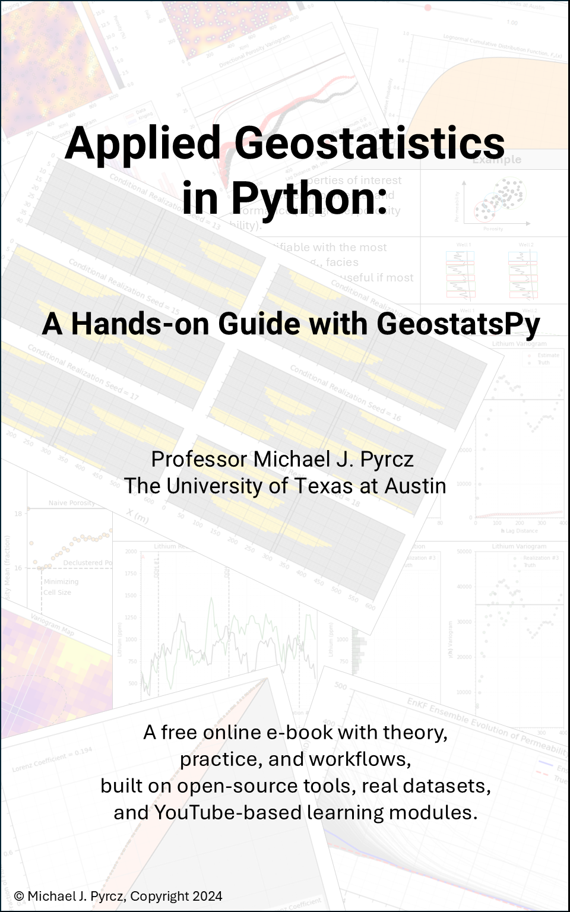

Geostatistics Glossary#
Michael J. Pyrcz, Professor, The University of Texas at Austin
Twitter | GitHub | Website | GoogleScholar | Book | YouTube | Applied Geostats in Python e-book | LinkedIn
Chapter of e-book “Applied Geostatistics in Python: a Hands-on Guide with GeostatsPy”.
Cite this e-Book as:
Pyrcz, M.J., 2024, Applied Geostatistics in Python: a Hands-on Guide with GeostatsPy [e-book]. Zenodo. doi:10.5281/zenodo.15169133 
The workflows in this book and more are available here:
Cite the GeostatsPyDemos GitHub Repository as:
Pyrcz, M.J., 2024, GeostatsPyDemos: GeostatsPy Python Package for Spatial Data Analytics and Geostatistics Demonstration Workflows Repository (0.0.1) [Software]. Zenodo. doi:10.5281/zenodo.12667036. GitHub Repository: GeostatsGuy/GeostatsPyDemos 
By Michael J. Pyrcz
© Copyright 2024.
This chapter is a summary of essential Geostatistics Terminology. (UPDATED July 8, 2026)
Motivation for this Glossary#
Firstly, why create this glossary?
I received a request for a course glossary from students in my Data Analytics and Geostatistics undergraduate course. While I usually dedicate a definition slide in my lecture slide decks to important terms, several students requested a consolidated glossary of terminology as part of their course review materials. The e-book provides an excellent vehicle and motivation for creating this resource.
Let me begin with a confession. There is already an outstanding resource: the Geostatistical Glossary and Multilingual Dictionary written by my good friend Dr. Ricardo A. Olea, an excellent geologist and statistician from the USGS. For those seeking a comprehensive and in-depth reference of geostatistical terminology, this book remains an excellent resource.
So why create another glossary?
By writing my own glossary, I can limit the scope and descriptions to the concepts covered in this course. I believe many students would be overwhelmed by the size, breadth, and mathematical notation of a comprehensive geostatistics glossary.
By integrating the glossary directly into the e-book, I can link terminology to detailed chapter discussions, demonstrations, and examples. The goal is to eventually populate all chapters with hyperlinks to glossary entries, enabling students to move easily between concepts and applications.
Finally, like the rest of this e-book, I want the glossary to be an evergreen living document. It will continue to evolve with new concepts, improved explanations, and feedback from students and readers.
Addition Rule#
Method to calculate the probability of any event (the union of outcomes, represented by “or” grammar). For example, the probability of \(A\) or \(B\) is calculated with the probability addition rule,
given mutually exclusive events we can generalize the addition rule as,
Used in:
Affine Correction#
A distribution rescaling method that applies a shift and linear scaling (stretching or squeezing) to a univariate distribution, for example, histogram.
For the case of affine correction of feature \(X\) to feature \(Y\),
we correct \(X\) to match the mean and variance of \(Y\):
where \(\overline{x}\) and \(\sigma_x\) are the mean and standard deviation of the original distribution, and \(\overline{y}\) and \(\sigma_y\) are the target mean and standard deviation.
The procedure,
centers the data by subtracting the original mean
rescales the deviations by the ratio of standard deviations
shifts the result to the target mean
Affine correction does not alter the distribution shape; it preserves the relative ordering of values and applies only a linear transformation. For transformations that modify distribution shape, see distribution transformation.
Used in:
Anisotropic Variogram#
A variogram that exhibits directional dependence in spatial continuity, where spatial correlation varies with azimuth.
Anisotropy can be observed in both experimental variograms and variogram models:
For an anisotropic experimental variogram, direction is explicitly considered by restricting azimuth and bandwidth (e.g., using azimuth tolerance < 90°). This produces variograms that capture spatial continuity in specific directions.
For an anisotropic variogram model, directional dependence is represented by assigning different ranges in different directions (e.g., a major range greater than a minor range). This models stronger continuity along one direction than another.
An anisotropic variogram is therefore directionally dependent, in contrast to an isotropic variogram, which assumes the same spatial continuity in all directions.
anisotropy often reflects geologic structure such as stratification, channeling, or depositional trends.
Also known as a directional variogram.
Used in:
Contrast with:
Area of Interest#
The 2D spatial domain that is being characterized, modeled, and evaluated to support subsurface decision making. In general, the area of interest,
is the subsurface reservoir for oil and gas, the ore body for mining, or the aquifer for hydrogeological applications
may include volume away from the reservoir or ore body to support data integration and extraction modeling
may be further subdivided into local regions or facies and modeled separately
is represented by a grid with features populated from data, estimation, or simulation
in 3D modeling is commonly called the volume of interest
the extent and grid cell size are selected based on a trade-off between model accuracy and computational complexity
Average#
The average is a measure of central tendency. There are several useful interpretations of the average,
representative value - a single value to represent an entire distribution
estimate - given a distribution of values, the average minimizes the L2 norm (sum of squared error)
scale-up - under linear averaging of a spatial feature, the average is the correct upscaled value
expectation - if all outcomes are equiprobable, the average is equal to the expectation
For a sample, the average is,
Note, the average is quite sensitive to outliers.
Used in:
Also see:
Azimuth Tolerance#
Azimuth tolerance defines the angular search window used to select data pairs when calculating a directional experimental variogram. It controls the range of azimuths (directions) around a target direction that are included in the variogram calculation.
for a target azimuth (e.g., 90° in map view, aligned with the positive x-direction), an azimuth tolerance of ±20° includes all pairs with azimuths between 70° and 110°.
General guidelines for setting azimuth tolerance:
a common choice for directional experimental variograms is ±22.5°, which results in a 45° total angular window. This provides a balance between directional specificity and sufficient data pairs for stable, interpretable variograms.
larger tolerances may be used to increase the number of data pairs and smooth the experimental variogram, improving interpretability at the cost of directional resolution.
for isotropic (omnidirectional) variograms, an azimuth tolerance of 90° is typically used, effectively including all directions and removing directional filtering.
azimuth tolerance does not introduce anisotropy; it only controls how directional the data selection is for the experimental variogram.
Used in:
Bandwidth#
The maximum orthogonal deviation from the lag vector when identifying data pairs to calculate an experimental variogram.
What is the motivation for using bandwidth?
when working with a cross section (axes, y is vertical and x is horizontal) at large lag distances, \(\bf{h}\), azimuth (dip) tolerance may result in including data from adjacent (mixing between) stratigraphic units.
bandwidth is typically applied to the vertical direction to reduce the potential for mixing between adjacent units
When not to use bandwidth?
bandwidth should not be used to calculate isotropic (also called omnidirectional) experimental variograms
bandwidth is rarely used to calculate horizontal experimental variograms
bandwidth is removed by setting it very large relative to the model extent
Used in:
Bayesian Probability#
Probability framework that represents uncertainty using prior knowledge and new information. Prior information may be based on,
expert judgment
experience
historical data
physical understanding, or
previous observations.
Bayesian probability provides a formal approach to updating uncertainty as new information becomes available. The general approach,
start with a prior probability distribution representing uncertainty before considering new information
formulate a likelihood function describing the compatibility of new observations with possible states or parameters
combine the prior and likelihood using Bayes’ theorem to calculate the posterior probability distribution
continue updating uncertainty as additional information becomes available
Bayesian probability is applied to solve probability problems where prior knowledge, limited data, or sequential information updates are important,
Bayesian probability contrasts with the frequentist probability approach, which interprets probability primarily through long-run frequencies of repeated experiments
Used in:
Contrast with:
Bayesian Updating#
The process of revising a prior probability distribution using new observations or evidence to obtain a posterior probability distribution according to Bayes’ theorem.
The Bayesian updating workflow is:
Specify a prior distribution representing existing knowledge.
Observe new data.
Evaluate the likelihood of the observations.
Apply Bayes’ Theorem to obtain the posterior distribution.
Use the posterior as the prior when additional observations become available.
Used in:
Bayesian Inference
Sequential Learning
Data Assimilation
Used in:
Also see:
Bayes Theorem#
A theorem that relates conditional probabilities and provides the mathematical basis for Bayesian updating of uncertainty models given new information.
where:
\(P(A)\) is the prior probability representing uncertainty before considering new information,
\(P(B|A)\) is the likelihood function describing the compatibility of observations \(B\) with possible states or parameters \(A\),
\(P(B)\) is the evidence term used to normalize the posterior probability,
\(P(A|B)\) is the posterior probability representing updated uncertainty after incorporating observations.
Commonly applied in:
Bayesian Inference
Compare with:
Used in:
Biased Spatial Sampling#
Spatial sampling such that the sample statistics are not representative of the population parameters. For example,
the sample mean is not the same as the population mean
the sample variance is not the same as the population variance
Of course, the population parameters are not accessible, so we cannot directly calculate sampling bias, i.e., the difference between the sample statistics and the population parameters. Methods we can use to check for biased sampling,
evaluate the samples for preferential sampling, clustering, filtering, or survivorship bias.
apply declustering as a diagnostic to check for biased sampling
Used in:
Big Data#
Identification of big data is based on a combination of these criteria:
Data Volume - many data samples and features, difficult to store, transmit and visualize
Data Velocity - high-rate collection, continuous data collection relative to decision making cycles, challenges keeping up with the new data while updating the models
Data Variety - data form various sources, with various types of data, types of information, and scales
Data Variability - data acquisition changes during the project, even for a single feature there may be multiple vintages of data with different scales, distributions, and veracity
Data Veracity - data has various levels of accuracy, the data is not certain
For common subsurface applications most, if not all, of these criteria are met. Subsurface engineering and geoscience are often working with big data!
Used in:
Big Data Analytics#
The process of examining big data using statistical, computational, and machine learning methods to discover patterns, extract insights, and support decision making.
Used in:
Bivariate#
Involving two features (variables) simultaneously, often to study their relationship, dependence, or correlation. For examples see bivariate statistic.
Used in:
Compare with:
Bivariate Statistic#
A summary measure calculated from two features (variables) measured over a collection of samples. Bivariate statistics describe the relationship, dependence, or correlation between two variables.
Examples include:
Scatter Plot – to visualize the relationship between two variables.
Joint Probability – to quantify the probability of outcomes from two variables occurring together.
Joint Probability Density Function – a complete probabilistic model of the relationship between two variables.
Used in:
Compare with:
Bootstrap#
A statistical resampling procedure used to quantify uncertainty in a calculated statistic by repeatedly resampling from the available sample data. Some general comments,
sampling with replacement - \(n\) (number of data samples) Monte Carlo simulations from the empirical distribution of the dataset produces a realization of the resampled data.
simulates the data collection process - the fundamental idea is to approximate repeated sampling from the population by repeatedly resampling from the available data instead of collecting new samples.
bootstrap any statistic - the bootstrap is flexible because uncertainty can be characterized for almost any calculated statistic.
computationally efficient - repeated resampling generates realizations of the statistic that can be used to build an uncertainty distribution. A large number of realizations, \(L\), improves characterization of the uncertainty model.
calculates the entire uncertainty distribution - for any statistic, summary statistics of the uncertainty distribution can be calculated, such as the mean, P10, and P90 uncertainty in an estimated mean.
bagging for machine learning - bagging applies bootstrap resampling to create multiple training datasets, train multiple predictive models, and aggregate predictions from the model ensemble to reduce prediction variance.
What are the limitations of bootstrap?
biased sample data will likely result in a biased bootstrap uncertainty model; samples should first be corrected for known bias, e.g., declustering
bootstrap requires a sufficient sample size to reliably characterize uncertainty
classical bootstrap quantifies uncertainty due to limited sampling but does not explicitly account for spatial context, including sample locations, volume of interest, or spatial continuity
a variant called spatial bootstrap accounts for spatial relationships during resampling
Used in:
Categorical Feature#
A feature or variable that can take one of a limited and usually fixed number of possible categories. Categories often represent qualitative classes and generally do not have inherent numerical meaning or ordering, unless categorical ordinal feature,
categories may have qualitative names, but are often represented by integer labels or binary indicator variables for computational analysis and modeling.
Used in:
Categorical Nominal Feature#
A categorical feature without a natural ordering relationship between categories. Examples include,
facies = {boundstone, wackestone, packstone, breccia}
minerals = {quartz, feldspar, calcite}
Categories may be assigned labels or integer codes for analysis, but the labels do not represent magnitude or ranking.
Used in:
Contrast with:
Opposite:
Categorical Ordinal Feature#
A categorical feature with a natural ordering relationship between categories. The ordering provides relative ranking information, but category differences may not represent equal numerical intervals. Examples include,
geologic age = {Miocene, Pliocene, Pleistocene} - ordered from older to younger rock
Mohs hardness = \(\{1, 2, \ldots, 10\}\) - ordered from softer to harder minerals
Used in:
Contrast with:
Cell-based Declustering#
A declustering method that assigns weights to spatial samples based on local sampling density to reduce sampling bias and produce statistics that are more representative of the population (i.e., improve geostatistical sampling representativity]) in the presence of clustered spatial sampling. Data weights are assigned such that,
samples in densely sampled areas receive less weight
samples in sparsely sampled areas receive more weight
The goal of declustering is to reduce the influence of uneven sample locations on statistical estimates. For example, infill drilling or blast hole samples should not significantly change statistics for the area of interest simply because some locations have been sampled more densely.
Cell-based declustering proceeds as follows:
a cell mesh is placed over the spatial data and initial weights are assigned proportional to the inverse of the number of samples in each cell
the cell mesh size is varied, and a cell size is selected based on the resulting declustered statistics. Typically, the cell size that minimizes the declustered mean is selected when the sample mean is biased high, and the cell size that maximizes the declustered mean is selected when the sample mean is biased low
to reduce sensitivity to cell mesh position, the cell mesh is randomly shifted multiple times and the resulting declustering weights are averaged for each datum
The weights are calculated as:
where \(n_l\) is the number of data in the current cell, \(L_o\) is the number of cells containing data, and \(n\) is the total number of data.
Some highlights for cell-based declustering,
expert judgement to assign cell size based on nominal sample spacing (e.g., data spacing before infill drilling) may improve performance compared with automated cell size selection based only on minimizing or maximizing the declustered mean
cell-based declustering does not account for boundaries of the area of interest; therefore, samples near the boundary may appear more sparsely sampled and receive larger weights
cell-based declustering was introduced by Professor André Journel in 1983, [Jou83], and remains a foundational geostatistical declustering method.
Used in:
Also see:
Cloud Transform#
A cosimulation approach based on the bivariate relationship, or scatter plot, between primary and secondary variables (or features) to simulate realizations.
the primary variable, \(z\), is simulated by conditioning on a previously simulated realization of the secondary variable, \(y\)
For all locations in the model, \(\alpha = 1, \ldots, nx \cdot ny\), \(\bf{u}_{\alpha}\),
find the collocated secondary value, \(y(\bf{u}_{\alpha})\)
calculate the conditional distribution,
from the scatter plot-based joint distribution function, \(f_{y,z}\), and the collocated secondary value, \(y(\bf{u}_{\alpha})\)
draw a simulated value from \(f_{z|y=y(\bf{u}_{\alpha})}(z)\) using a field of correlated p-values (known as a p-field)
Some comments about cloud transform,
prioritizes reproduction of the cloud, the bivariate relationship (scatter plot), between the primary and secondary variables
may not reproduce the spatial continuity or histogram of the primary variable well because the primary variable spatial model is not explicitly simulated
cloud transform is commonly used in practice to simulate permeability conditioned to secondary porosity realizations. Permeability data are often sparsely sampled, resulting in poorly defined permeability distributions and variograms, while porosity data often have better defined distributions and spatial continuity models. The porosity-permeability relationship may therefore provide more reliable conditioning information.
the general approach of calculating simulated realizations by applying p-fields to local conditional distributions is called p-field simulation. It simplifies information integration by separating local conditioning from the imposition of spatial correlation and can provide computational advantages for large models.
Mentioned but not demonstrated (to be added later) in:
Clustered Spatial Sampling#
Spatial samples with locations preferentially selected or concentrated in certain areas, resulting in potentially biased statistics.
spatial samples are often clustered in locations associated with higher or more desirable values, for example, high porosity and permeability, good quality shale for unconventional reservoirs, or low acoustic impedance indicating higher porosity
Because the true population parameters are generally unknown, sampling bias cannot be directly calculated as the difference between sample statistics and population parameters. Methods to diagnose and address biased sampling include,
evaluate samples for preferential sampling and spatial clustering
apply declustering as a diagnostic method to evaluate the impact of clustered sampling on statistics
Used in:
Cognitive Biases#
Cognitive biases are automatic mental shortcuts, or heuristics, that influence human reasoning and decision making. These shortcuts help humans efficiently process information under uncertainty, but they can also systematically distort interpretation of data, scientific evidence, and engineering decisions.
Common cognitive biases include:
Anchoring Bias - excessive influence of initial information or assumptions, even when later information suggests alternatives.
Availability Heuristic - overestimating the importance of information that is easily recalled or available, such as anecdotes.
Bandwagon Effect - increasing confidence in a belief because many others hold the same belief.
Blind-spot Effect - failing to recognize one’s own cognitive biases.
Choice-supportive Bias - favoring information that supports previous decisions or commitments.
Clustering Illusion - perceiving patterns in random data.
Confirmation Bias - preferentially considering information that supports existing beliefs or models.
Conservatism Bias - favoring established information over new evidence.
Recency Bias - giving excessive weight to recently acquired information.
Survivorship Bias - focusing only on successful or visible examples while ignoring missing cases.
Mitigating cognitive biases requires deliberate uncertainty analysis, quantitative evaluation of evidence, diverse perspectives, and critical review of assumptions.
Used in:
Cokriging#
A generally bivariate and possibly multivariate extension of kriging that simultaneously accounts for primary and secondary variable(s) to build multivariate spatial models.
like regular kriging, a spatial estimation approach that relies on linear weights that account for spatial continuity, data closeness, and redundancy
the weights are determined to provide an unbiased estimator with minimum estimation variance
The simple cokriging weights are calculated by solving a linear system of equations that may be represented with matrix notation as,
where we assume that there are \(1, 2, \ldots, n_z\) primary data \(z\), and \(1, 2, \ldots, n_y\) secondary data \(y\).
note, I could be more rigorous with the notation and indicate the location \(\bf{u}_{1}\) for \(z\) and \(y\) may not be the same location, but the notation was already getting quite dense.
This system integrates the,
spatial continuity - as quantified by the variogram model (and covariance function to calculate the covariance, \(C\), values)
redundancy - the degree of spatial continuity between all of the available data with themselves, \(C(\bf{u}_i,\bf{u}_j)\)
closeness - the degree of spatial continuity between the available data and the estimation location, \(C(\bf{u}_i,\bf{u})\)
relationship - between the primary and secondary features over lag distance from the cross covariance terms, \(C_{z,y}\) and \(C_{y,z}\).
Once the weights are calculated from the above linear system of equations, the cokriging estimator is expressed as,
assuming that each feature is detrended such that the mean is 0.0.
Some general comments about cokriging,
secondary and primary data may be collocated, not collocated, or a mixture of collocated and non-collocated data
direct variograms, \(\gamma_z\) and \(\gamma_y\), and cross variograms, \(\gamma_{z,y}\), must be calculated and modeled. To ensure all direct and cross variograms are jointly positive definite, constraints from the linear model of coregionalization must be applied.
the model can be expanded to consider any number of secondary variables
Cokriging provides a rigorous framework for multivariate analysis spatial estimation; however, simplified approaches such as collocated cokriging and cloud transform are more commonly applied in practice.
Mentioned but not demonstrated (to be added later) in:
Compare with:
Collocated Cokriging#
A simplified variant of cokriging that honors primary variable hard data and spatial continuity while incorporating the bivariate relationship between primary and secondary variables.
Collocated cokriging introduces two assumptions that greatly simplify the cokriging method:
Markov screening - only one (the collocated) secondary variable datum is considered. The secondary variable value at the estimation location is assumed to screen all secondary data at other locations.
as a result, the secondary variogram is not required and the cokriging system is greatly reduced
Bayesian updating - this relationship can be viewed as a Bayesian updating analogy, the correlation coefficient between primary and secondary variables provides prior information about their relationship, while the primary covariance function model provides the spatial continuity framework used to construct the updated cross covariance model,
where \(\rho_{z,y}\) represents the prior relationship between the primary and secondary variables, \(C_z(\bf{h})\) represents the spatial covariance model, and \(C_{z,y}(\bf{h})\) represents the resulting cross covariance model.
as a result, we do not need to calculate the cross variogram
The collocated cokriging system of equations in matrix notation are,
where \(C_{z,y}(0)\) is the cross covariance at lag distance \(\bf{h} = 0\), for standardized features (variance of 1.0) this is the correlation coefficient, \(C_{z,y}(0) = \rho_{z,y}\).
Used in:
Compare with:
Complementary Events#
The logical NOT relationship in probability. For a simple example, if we define event \(A\), then the complementary event, \(A^c\), represents NOT \(A\), and the resulting probability closure relationship is,
Complementary events can also be considered for multivariate and conditional probabilities. For example, for a bivariate conditional relationship,
Note that the conditioning event must remain the same for complementary probability closure.
Used in:
Conditional Probability#
The probability of an event given that another event has occurred. For example,
We read \(P(A|B)\) as the probability of \(A\) “given” \(B\) has occurred. Conditional probability is calculated as the joint probability divided by the marginal probability of the conditioning event.
Conditional probabilities can be extended to multivariate cases by including additional conditioning events. For example,
Used in:
Continuous Feature#
A feature that can take any value within a continuous range of possible values. For example,
porosity = \(\{13.01\%, 5.23\%, 24.62\%\}\)
gold grade = \(\{4.56 \text{ g/t}, 8.72 \text{ g/t}, 12.45 \text{ g/t}\}\)
Used in:
Contrast with:
Continuous Interval Feature#
A continuous feature where differences between values are meaningful and equally spaced, but the zero point is arbitrary and does not represent the absence of the quantity.
For example,
Celsius temperature scale (the zero point is defined by convention)
calendar year (there is no objective zero year)
Continuous interval features can be compared using addition and subtraction operations, but multiplication and division comparisons are not meaningful.
Used in:
Contrast with:
Continuous Ratio Feature#
A continuous feature where differences between values are meaningful, the zero point represents absence of the measured quantity, and ratios are physically meaningful.
For example,
Kelvin temperature scale
porosity
permeability
saturation
Because ratio features have a true zero, multiplication and division operations are meaningful. For example, a permeability of 200 mD can be described as twice the permeability of 100 mD.
Used in:
Contrast with:
Core#
The primary direct sampling method for characterizing subsurface resources.
In oil and gas exploration and development, core samples are obtained by replacing the drill bit with a specialized core barrel to recover a continuous rock sample. This process is expensive and time-consuming, so core data are typically sparsely and selectively acquired, often targeting specific geological intervals of interest.
In mining exploration and grade control, core drilling (commonly diamond drilling with a core barrel) is widely used because ore bodies may be accessed through surface drilling or underground workings such as drifts or stopes. As a result, core data are often more common than indirect measurements such as well logs in these settings.
In soft sediment environments, gravity, piston, and similar coring methods are used to sample unconsolidated sediments in lakes and oceans.
What do we learn from core data?
Petrological properties (e.g., sedimentary structures, mineralogy, and grade), petrophysical properties (e.g., porosity and permeability), and geomechanical properties (e.g., elastic moduli and Poisson’s ratio).
Stratigraphic relationships and geological geometry through direct observation and spatial interpolation between wells and drill holes.
Core data are critical for subsurface resource interpretation. They provide the most direct observations available, anchor geological and reservoir models, and provide calibration data for indirect measurements.
For example, core data are often used to calibrate well log responses, such as facies classification and porosity estimation.
Used in: TBD
Also see:
Correlation Coefficient#
A standardized measure of the strength and direction of the linear relationship between two features.
To understand the correlation coefficient, start with variance, a measure of the dispersion of a single feature,
We can replace one squared deviation with the deviation of a second feature, \(y\), to obtain the covariance,
Covariance measures how features \(x\) and \(y\) vary together. However, covariance depends on the units and scale of both features. We standardize covariance by the product of the standard deviations of \(x\) and \(y\) to calculate the correlation coefficient,
or equivalently,
The correlation coefficient ranges from \(-1.0\) to \(1.0\),
\(\rho_{xy}=1.0\) indicates a perfect positive linear relationship
\(\rho_{xy}=-1.0\) indicates a perfect negative linear relationship
\(\rho_{xy}=0.0\) indicates no linear relationship
The correlation coefficient is useful because it is,
independent of the dispersion or standard deviation of both features
dimensionless, allowing comparison of relationships between features with different units and scales
related to the coefficient of determination, \(R^2\), for a simple linear regression model with an intercept, where \(R^2=\rho_{xy}^2\)
when we replace covariance with a covariance function, correlation becomes the correlogram, \(\rho(\mathbf{h})\), a measure of spatial correlation over separation distance
Some cautionary notes about the correlation coefficient,
correlation does not imply causation - causal analysis requires careful experiments with sufficient replicates and control of confounding features.
correlation is sensitive to outliers - a single extreme value can substantially change the magnitude and direction of the correlation coefficient.
Used in:
Also see:
Correlogram#
A measure of similarity between a feature and itself separated by a lag vector. The correlogram is the covariance between values separated by lag distance normalized by the feature variance,
For standardized features with a mean of 0.0 and variance of 1.0, the correlogram simplifies to,
The correlogram is the covariance normalized by the variance,
where \(C_x(\bf{h})\) is the covariance function and \(C_x(0)\) is the variance. Therefore, for standardized features with variance equal to 1.0,
The correlogram is also related to the variogram,
and for standardized features,
The correlogram is easy to interpret since it represents the correlation between samples separated by a specified lag distance.
Used in: TBD
Also see:
Cosimulation#
A set of simulation methods for simulating realizations of a primary feature conditional on a secondary feature realization. All cosimulation methods attempt to capture primary feature spatial continuity, honor local conditioning data, and reproduce the relationship with the secondary feature.
Each cosimulation method has a conditioning priority.
Collocated cokriging prioritizes the primary feature histogram and variogram while honoring the relationship between the primary and secondary features through their correlation coefficient.
The relationship between the primary and secondary features is limited to a correlation coefficient after Gaussian transformation of both features (i.e., in Gaussian space).
In the case of dense conditioning data, the relationship observed at the data locations will override the correlation coefficient.
Cloud transform prioritizes the specific form of the bivariate relationship (cloud) between the two features but may not reproduce the primary feature histogram or spatial continuity.
The precise scatter plot relationship between the primary and secondary features is prioritized.
These methods start with a completed realization of the secondary feature. For example,
first simulate a copper realization and then cosimulate the zinc (primary feature) realization given the copper (secondary feature) realization using collocated cokriging and the correlation coefficient between Gaussian transformed copper and zinc data.
first simulate a porosity realization and then cosimulate the permeability (primary feature) realization given the porosity (secondary feature) realization using cloud transform and the scatter plot relationship between Gaussian transformed porosity and permeability.
With cosimulation, there is an increasing likelihood that multiple information sources are contradictory. When this occurs, the lower-priority information source is preferentially sacrificed.
While the full cokriging approach for cosimulation is available, due to the inference burden of modeling all direct and cross variograms, it is typically not used in practice.
Used in:
Also see:
Covariance#
A measure of how two features vary together.
positive covariance indicates the features tend to increase together
negative covariance indicates that as one feature increases, the other tends to decrease
covariance near zero indicates little or no linear relationship
For a sample,
The covariance can be interpreted relative to the more familiar correlation coefficient.
the correlation coefficient is the covariance standardized by the product of the standard deviations of the two features
Some other observations about correlation,
unlike the correlation coefficient, covariance depends on the units of the two features and is therefore most useful for mathematical calculations rather than direct interpretation.
by replacing the second feature with the same feature offset in space, we get the covariance function, a useful measure of spatial similarity.
Used in:
Also see:
Covariance Function#
A spatial covariance as a measure of similarity between a feature and itself separated by a lag vector. The covariance function is calculated as the average product of deviations from the mean for values separated by the lag vector,
The covariance function, \(C_z(\bf{h})\), is the variogram, \(\gamma_z(\bf{h})\), flipped upside down relative to the sill, \(\sigma_z^2\),
The covariance function is also related to the correlogram,
where \(\rho_x(\bf{h})\) is the correlogram. For standardized features with a mean of 0.0 and variance of 1.0,
We model variograms, but inside kriging and simulation methods they are often converted to covariance values for numerical convenience,
Covariance matrices are typically diagonally dominant because the variance occurs on the diagonal, improving numerical stability when solving the linear systems used to calculate kriging weights.
Used in:
Also see:
Cumulative Distribution Function#
Commonly known by its acronym CDF, it describes the accumulation of probability up to a specified value. The CDF is calculated as the cumulative sum of a discrete probability mass function or the integral of a continuous probability density function.
Important concepts about CDFs,
the CDF is stated as \(F_x(x)\), while the PDF is stated as \(f_x(x)\)
the CDF is the probability that a random sample, \(X\), is less than or equal to a specific value \(x\); therefore, the y-axis represents cumulative probability,
for discrete distributions, the CDF is calculated by summing probabilities up to and including the value \(x\)
for CDFs there is no bin assumption; therefore, bins are defined by the resolution of the available data
the CDF is a monotonically non-decreasing function because a negative slope would indicate decreasing cumulative probability over an interval
The requirements for a valid CDF include,
bounded probability:
non-decreasing probability:
probability closure at the limits:
Used in:
Cyclicity#
A variogram interpretation based on oscillating experimental variogram values that may indicate underlying geological periodicity, such as repeating depositional cycles or layered structures.
Important considerations,
oscillations in an experimental variogram may be caused by insufficient data, sampling artifacts, or random variability and should not automatically be interpreted as geological cyclicity.
the wavelength of the oscillations in the experimental variogram represents the characteristic spatial scale of the repeating geological structure.
cyclicity may be incorporated into a Variogram Model using a hole effect positive definite variogram structure.
Used in:
Data#
Data are observations collected to characterize a population or process. In spatial data analytics and geostatistics, three fundamental aspects determine the value of a dataset:
Data coverage - what proportion of the population has been sampled? In general, hard data have high resolution (small volume support), but poor spatial coverage. For example,
Core coverage in deepwater oil and gas may sample only one five hundred millionth to one five billionth of a reservoir, assuming 3-inch diameter cores with 10% core recovery in vertical wells spaced 500–1,500 m apart.
Core coverage for mining grade control may sample approximately one eight thousandth to one thirty thousandth of an ore body, assuming HQ (63.5 mm) cores with complete recovery in drill holes spaced 5–10 m apart.
\(\quad\) In contrast, soft data often provide excellent (sometimes complete) spatial coverage, but lower resolution, for example,
Seismic and other remote sensing measurements commonly cover the entire area of interest but have substantially lower spatial resolution, generally decreasing with depth.
Volume support (data scale) - what volume or scale is represented by each measurement? Examples include,
core tomography imaging at the pore scale (approximately 1–50 \(\mu\)m)
gamma ray well log sampled every 0.3 m with approximately 1 m radial investigation
ground-based gravity gradiometry with an effective resolution of approximately 20 m × 20 m × 100 m
Information content - what does the dataset tell us about the subsurface? Examples include,
grain size distributions used to calibrate permeability and saturation
fluid contacts used to identify oil-water contacts
structural dip and continuity used to infer reservoir connectivity
mineral grades used to delineate ore shells for mine planning
Used in: TBD
Data Analytics#
In this book, data analytics is used synonymously with:
Used in:
Debiasing with Secondary Data#
When the full range of a primary feature is not sampled, declustering alone cannot remove sampling bias because parts of the feature distribution are completely missing. Instead, we use,
a secondary data feature that provides coverage over the entire area of interest
the relationship between the Primary Data feature and the secondary feature
to infer the unsampled portion of the primary feature distribution.
The relationship between the primary and secondary features may be established using,
a statistical model that extrapolates the primary feature into the unsampled range
a physical model based on scientific or engineering understanding
expert knowledge of the underlying process
Unlike declustering, which corrects for clustered spatial sampling, debiasing with secondary data addresses situations where part of the primary feature distribution has not been sampled at all.
Mentioned but not demonstrated (to be added later) in: TBD
Compare with:
Decision Criteria#
An engineered feature or metric calculated from one or more subsurface models to support decision making. Decision criteria quantify the consequences of alternative decisions and may represent economic value, technical performance, environmental impact, health and safety, or combinations of these objectives. For example,
contaminant recovery rate to support the design of a pump-and-treat soil remediation project
oil in place to determine whether a reservoir should be developed
Lorenz coefficient as a heterogeneity measure to classify a reservoir and identify appropriate analogs
recovery factor or production rate to schedule production and optimize facilities
recovered mineral grade and tonnage to determine the economic ultimate pit shell
In quantitative decision workflows, the decision criterion is used to rank competing alternatives. Common approaches include,
maximizing a profit metric
minimizing a loss function
Best practice is to define decision criteria that directly represent project value. For example,
rather than stopping at hydrocarbon in place, continue through engineering and economics to estimate project profit (currency).
Used in:
Decision Making#
The ultimate objective of geostatistics and data analytics is to support better decisions. Estimation, prediction, uncertainty modeling, and machine learning are intermediate steps whose value is realized only when they improve decisions.
Decision making involves selecting the best,
estimate
choice
from a set of alternatives.
In quantitative decision workflows, a decision criteria is used to rank competing alternatives. Common approaches include,
maximizing a profit metric
minimizing a loss function
to identify the optimum estimate or decision.
when accounting for uncertainty, this optimization is performed over an ensemble of subsurface realizations and scenarios.
Used in:
Declustering#
A family of methods that assign weights to spatial samples based on local sampling density so that weighted statistics are more representative of the inaccessible population. Data weights are assigned so that,
samples in densely sampled areas receive less weight
samples in sparsely sampled areas receive more weight
There are various declustering methods:
It is important to note that no declustering method can prove that for every data set the resulting weighted statistics will improve the prediction of the population parameters, but in expectation these methods tend to reduce the bias.
Used in:
Declustered Statistics#
Once declustering weights are calculated for a spatial dataset, the unweighted (also called naive) statistics are replaced with weighted statistics that account for the declustering weights. These corrected statistics are then used as input for all subsequent analysis and modeling to mitigate sampling bias. For example,
the declustered mean is used as the stationary global mean for simple kriging.
the weighted cumulative distribution function is used in sequential Gaussian simulation so that the back-transformed realizations reproduce the declustered distribution.
Any sample statistic can be computed using declustering weights, including the entire cumulative distribution function (CDF). Examples include:
weighted sample mean,
where \(n\) is the number of data.
weighted variance,
where \(\overline{x}_{wt}\) is the declustered mean.
weighted Covariance,
where \(\overline{x}_{wt}\) and \(\overline{y}_{wt}\) are the declustered means for features \(X\) and \(Y\).
weighted cumulative distribution function (CDF),
This expression represents the empirical weighted CDF evaluated at the observed data values. Between observations, the CDF is obtained by interpolation.
No declustering method can guarantee improved estimates of the population parameters for every dataset.
however, when preferential sampling is present, declustering methods generally reduce sampling bias and provide improved statistical estimates in Expectation.
Used in:
Deterministic Model#
A model that assumes a system or process is completely specified such that the same inputs always produce the same outputs. Deterministic models do not explicitly represent uncertainty in the system or process; therefore,
uncertainty is neglected and the system is treated as known or certain.
Deterministic models may be based on,
engineering and geoscience physics
expert interpretation and knowledge
data-driven estimation methods
Examples include,
numerical flow simulation for a specified set of reservoir properties
stratigraphic bounding surfaces interpreted from seismic data
kriging estimates
machine learning prediction models that return a single prediction
Advantages:
integrates physics, expert knowledge, and available data
integrates multiple information sources
often straightforward to interpret and apply
Disadvantages:
provides a single model or prediction without explicitly representing uncertainty
may underestimate decision risk when uncertainty is significant
often time consuming to construct, calibrate, and validate
Contrast with:
Used in:
Discrete Feature#
A feature that can only take one of a countable set of distinct values. Discrete features may be naturally discrete (categorical feature) or created by grouping (or binning) a continuous feature. For example,
binned continuous feature – porosity between 0% and 20% assigned to 10 bins:
\(\quad\) represented by the bin centroids,
categorical feature – facies:
ordinal feature – Mohs hardness:
Used in:
Contrast with:
Dispersion Variance#
A generalized measure of variability that accounts for the Volume Support of the data or model and the area of interest. Dispersion variance describes how variability changes when moving from a smaller support size (e.g., core plug, grid block) to a larger volume of interest.
For data support size represented by \(\cdot\),
and for model support size represented by \(v\),
both over the volume of interest, \(V\). For point-support data over the volume of interest, dispersion variance simplifies to the familiar variance,
therefore, the variance, \(\sigma^2\), is a special case of dispersion variance.
Under the assumptions of stationary mean, variance and variogram, dispersion variance is calculated as,
where \(\overline{\gamma}_{V,V}\) and \(\overline{\gamma}_{v,v}\) are variogram models integrated over volumes \(V\) and \(v\), respectively, known as Gammabar values.
Dispersion variance is fundamental for understanding the impact of Volume Support on variability, including the reduction of variance when moving from small-scale measurements to larger model blocks.
Used in:
Distribution Transformation#
A mapping from one probability distribution to another through corresponding percentile values, also called a quantile transformation. The transformation preserves the rank ordering of the data while changing the distributional shape, resulting in new,
Distribution transformations are commonly applied in geostatistical methods and workflows because,
inference - to transform a sample distribution toward an expected distribution when data are sparse, biased, or insufficient to characterize the full distribution
theory - to satisfy a distributional assumption required by a workflow step, for example, a Gaussian distribution with mean 0.0 and variance 1.0 is required for sequential Gaussian simulation
data preparation - to reduce the influence of extreme values by mapping them into the target distribution while preserving their rank relationship
How do we perform distribution transformations?
Values are transformed from the original cumulative distribution function (CDF), \(F_X\), to a target CDF, \(G_Y\), using percentile matching. This quantile transformation is applied to all sample values:
Forward transform:
Reverse transform:
This approach may be applied to any distribution, including parametric and nonparametric distributions, as long as percentile values can be mapped between the distributions.
The key property is:
rank preserving transform - the percentile position of a value is maintained, for example, P25 remains P25 after transformation
Contrast with affine correction, which only adjusts distribution location and scale (mean and variance),
distribution transformation modifies the complete distribution, including higher-order statistics and distribution shape
Used in:
Drill Cuttings#
Direct samples of subsurface material generated during drilling operations.
drill cuttings are fragments of rock produced by the drill bit and continuously transported to the surface, where they are collected, described, and logged during drilling.
Drill cuttings provide broader spatial coverage than core data because they are commonly recovered along much of the well or borehole trajectory during routine drilling operations. However, compared with core data, drill cuttings,
represent small, irregular, and mixed rock fragments rather than a continuous sample volume. Individual fragments may range approximately from 0.1 mm to 5 cm, although larger fragments (cavings) may occur due to mechanical failure along the borehole or wellbore.
lose orientation and large-scale structural information during recovery and transport because fragments are mixed and disrupted during pneumatic or hydraulic lifting from the borehole or well.
provide lithological and compositional information but generally cannot preserve continuous sedimentary structures, fracture orientations, or fine-scale spatial relationships.
Drill cuttings represent a trade-off between core and indirect measurements; they provide extensive direct sampling coverage but with reduced spatial resolution and geological context.
Used in: TBD
Also see:
Ergodic Fluctuations#
Statistical fluctuations observed when calculating statistics from finite simulated realizations of an ergodic random function. The statistics calculated from an individual realization are expected to vary around the input model statistics. For example,
the histogram of an individual realization may not exactly reproduce the input histogram
the variogram of an individual realization may not exactly reproduce the input variogram
the correlation coefficient between primary and secondary paired realizations may not exactly reproduce the input correlation coefficient
Some general observations about ergodic fluctuations,
part of the uncertainty model - fluctuations in statistical reproduction, along with scenarios, are an important part of the uncertainty model because they represent natural variability among possible realizations
magnitude - controlled by the ratio of spatial continuity range to the size of the model domain
minimized - when the model domain is large relative to the spatial continuity range, providing many effective independent spatial samples
maximized - when the model domain is small relative to the spatial continuity range, providing fewer effective independent spatial samples
When checking simulated realizations, some fluctuation in the histogram, variogram, and correlation coefficients should be expected.
best practice is to evaluate the expectation of these statistics over many realizations and compare the ensemble statistics with the input model statistics
Used in:
Estimation#
The paradigm and process of obtaining a single best value to represent a feature or variable at an unsampled location or time. The “best” estimate is determined by an objective criterion, such as minimizing estimation error or uncertainty.
Some additional estimation concepts,
local accuracy - estimation methods prioritize honoring local data and minimizing local uncertainty, often at the expense of reproducing the full range of global spatial variability
deterministic model - the same inputs always produce the same outputs
smoothness - estimation methods commonly produce values that are smoother than the true variability because local averaging reduces variance
nonlinear response - smooth estimates may not be appropriate when applying transforms or decision criteria that are sensitive to heterogeneity, such as flow response, connectivity, recovery, or economic metrics
examples - inverse distance weighting and kriging
many predictive machine learning models focus on estimation, including k-nearest neighbours, decision trees, and random forests
Used in:
Contrast with the simulation paradigm:
Estimation Variance#
The uncertainty of a spatial estimate quantified as the variance of the difference between the estimated value and the unknown true value,
where \(Z^*(\mathbf{u})\) is the estimated value at location \(\mathbf{u}\) and \(Z(\mathbf{u})\) is the unknown true value.
For simple kriging, the estimator is a weighted sum of nearby data,
Substituting the kriging estimator into the estimation variance,
Expanding the variance using covariance terms,
where \(C(\mathbf{u}_\alpha,\mathbf{u}_\beta)\) represents covariance between data locations and \(C(\mathbf{u}_\alpha,\mathbf{u})\) represents covariance between data locations and the estimation location.
Using the kriging system equations, the estimation variance simplifies to,
or,
where \(\sigma^2\) is the variance of the feature and \(C(\mathbf{h}_\alpha)\) is the covariance between each data location and the estimation location separated by lag vector \(\mathbf{h}_\alpha\).
The estimation variance has important properties,
minimized by the kriging weights, making kriging a minimum variance unbiased estimator.
depends only on the spatial configuration of the data, the covariance model, and the estimation location; it does not depend on the measured data values.
generally increases where data are sparse or spatial continuity is weak, and decreases where data are dense and spatial continuity is strong.
Used in:
See also:
Evidence#
In Bayes’ Theorem, the evidence term represents the overall probability of observing the data. It provides the normalization required to ensure probability closure of the updated posterior probability.
where:
\(P(A)\) is the prior probability representing uncertainty before observing new information,
\(P(B|A)\) is the likelihood function describing the compatibility of observations \(B\) with state or parameter \(A\),
\(P(B)\) is the evidence term representing the total probability of observing data \(B\) and normalizing the posterior probability,
\(P(A|B)\) is the posterior probability representing updated uncertainty after incorporating observations.
Expectation#
The expected value is the probability-weighted average outcome of a random variable. It is a measure of central tendency that represents the average value accounting for the likelihood of all possible outcomes.
for a discrete random variable, the expectation is the sum of all possible outcomes weighted by their probabilities,
for a continuous random variable, the expectation is the integral of all possible values weighted by the probability density function,
Expectation is also the mathematical foundation for the average when all realizations are considered equiprobable.
Expectation is extremely useful for doing mathematics with random variables,
expectation of a constant,
expectation of a random variable plus a constant,
expectation of a constant multiplied by a random variable,
expectation of the addition of two random variables,
Expectation is widely used for optimum decision making in the presence of uncertainty, i.e., selecting the choice that maximizes expected profit.
Used in:
Also see:
Experimental Variogram#
An empirical variogram calculated from sample data and visualized as discrete points, with lag distance on the x-axis and variogram value on the y-axis.
Each point represents one half the average squared difference between data pairs separated by a specified lag distance and direction,
where \(N(\bf{h})\) is the number of data pairs separated by lag vector \(\bf{h}\). Some salient points about experimental variograms,
experimental variogram results can be sensitive to variogram search parameters, including lag distance tolerance and azimuth tolerance, which control the data pairs included in each estimate.
experimental variograms are represented by discrete points because they are calculated only at selected lag distances and directions. This differentiates them from a variogram model, which is represented by a continuous mathematical function.
experimental variograms are often more difficult to calculate and interpret in horizontal directions due to sparse sampling and limited data pairs. Vertical experimental variograms are often easier to characterize because wells commonly provide dense sampling along vertical and sub-vertical directions.
Used in:
Contrast with:
Facies#
A method of grouping rock into discrete categories, creating a new categorical feature. Facies are used to represent geological variability in a manner that improves,
characterization through statistics, e.g., distributions and variograms
prediction of subsurface features, e.g., porosity and permeability away from wells
For oil and gas, the term facies is commonly used, while mining commonly uses terms such as rock types or zones. In subsurface modeling, multiple types of facies may be considered,
lithofacies - based on rock-related characteristics, including lithology, sedimentary structures, and small-scale geological features that influence porosity and permeability, for example, shale, sandstone, dolomite, limestone, laminated sandstone, hummocky cross-stratification, etc.
depofacies - integrate multiple lithofacies with depositional geometry and reservoir-scale architecture that impacts flow behavior and well connectivity, for example, channel axis, channel margin, outer sheet, etc.
seismic facies - large-scale classifications based on acoustic and elastic properties and seismic geomorphological expressions that define the reservoir framework, for example, parallel continuous high amplitude, chaotic amplitudes, mounded discontinuous low amplitudes, truncation, onlap, offlap, etc.
Here are some important considerations for determining facies,
facies or rock type is an important decision for subsurface modeling. Facies determination should remain a collaborative decision integrating expertise from the entire project team (Geologists, Reservoir Modelers, Reservoir Engineers, Petro- and Geophysicists).
facies or rock types must improve subsurface prediction away from the data or they do not add value.
the number of facies is a balancing act between geological realism, statistical inference, and modeling effort.
reservoir modeling is often hierarchical, for example, geological elements contain multiple depofacies, depofacies contain multiple lithofacies, and lithofacies have specific porosity and permeability distributions.
often 80-90% of reservoir-scale heterogeneity may be captured by the facies model.
Here is a summary of criteria for facies, rock types, or any discrete grouping used in a subsurface model,
Separation of rock properties - facies must be separable based on features that impact subsurface environmental and economic performance, for example, grade, porosity, permeability, etc.
Identifiable in data - facies must be identifiable from the most commonly available data. For example, facies identifiable only from cores are not useful if most wells only have well logs.
Map-able away from data - facies must be easier to predict away from data than the rock properties of interest directly; otherwise, facies do not improve prediction.
Sufficient sampling - there must be enough data to infer reliable statistics within each facies, i.e., by-facies statistics.
Used in:
Facies Simulation#
Methods for generating multiple plausible spatial facies realizations of categorical features, commonly facies in oil and gas or rock types in mining.
Facies simulation represents geological uncertainty by generating alternative models that honor available data and spatial relationships.
There are four common approaches for simulating facies,
sequential indicator simulation - based on indicator variograms for each facies category and indicator kriging to calculate local conditional probabilities within the sequential simulation framework. These conditional probabilities define the local cumulative distribution function used to sample facies realizations.
multiple point simulation - a pattern reproduction method based on categorical training images. Spatial relationships and geological patterns are learned from the training image and used to calculate local conditional probabilities within a sequential simulation framework.
object-based simulation - a marked point process based on Monte Carlo simulation of geometric parameters and stochastic placement of geological objects within the volume of interest.
generative machine learning - trained deep learning generators used to calculate categorical realizations by learning complex geological patterns from training datasets.
Facies simulation methods differ primarily in how they represent and reproduce geological information,
variogram-based methods prioritize two-point spatial continuity.
multiple point methods prioritize complex spatial patterns and geological geometries.
object-based methods prioritize explicit geological objects and architecture.
generative machine learning methods prioritize learned patterns from large training datasets.
Used in:
Feature#
A property measured, observed, or calculated (i.e., engineered feature) for analysis in a study. Features represent the information used to characterize, model, or predict a system. Examples include,
porosity, permeability, mineral concentrations, saturations, contaminant concentration, etc.
derived properties such as seismic attributes, ratios, transformations, or other calculated quantities.
Different fields use different terminology,
in data mining and machine learning this is commonly called a feature
in statistics this is commonly called a variable
in geoscience this is often called a property or attribute
Feature values may require significant measurement, processing, interpretation, and analysis before they are suitable for modeling.
When features are modified, combined, or transformed to improve model performance, this is called feature engineering.
Also known as:
Variable
Used in:
Feature Engineering#
The process of creating, modifying, combining, transforming, or selecting features to improve model performance, interpretation, or statistical inference. Feature engineering may incorporate domain knowledge, physical understanding, and data analysis. Examples include,
adjusting total porosity to effective porosity
combining porosity and permeability into a single rock quality index measure
transforming data to account for volume support differences using a volume-variance relations model
weighting data samples for improved spatial representativity using declustering
transforming a data distribution to standard normal in sequential Gaussian simulation
Feature engineering is commonly applied before modeling to create inputs that better represent the controlling processes and improve prediction or estimation
Used in:
Frequentist Probability#
A measure of the probability that an event occurs based on the long-run relative frequency observed from repeated experiments or repeated sampling. For random experiments and well-defined settings (such as coin tosses),
where:
\(n(A)\) = number of times event \(A\) occurred
\(n\) = number of trials
The frequentist interpretation assumes that probability represents an objective property of a repeatable process. Examples include,
probability of drilling a dry hole for the next well
probability of encountering sandstone at a location (\(\bf{u}_{\alpha}\))
probability of exceeding a rock porosity of \(15\%\) at a location (\(\bf{u}_{\alpha}\))
In geoscience, many processes cannot be repeated exactly; therefore, frequentist probabilities are often estimated from available samples under assumptions of representativity and stationarity.
Used in:
Contrast with:
Gammabar#
A volume-integrated variogram, \(\overline{\gamma}(v,V)\), that accounts for the spatial-continuity between two volumes of support. The tail locations are integrated over volume \(v\) and the head locations are integrated over volume \(V\),
where \(\mathbf{u}\) and \(\mathbf{u}^{\prime}\) represent all possible tail and head locations within the two volumes.
Since a continuous variogram function for all possible locations is not generally available, gammabar values are practically calculated by discretizing both volumes and averaging the variogram values over all possible pairs of discretized locations over the two volumes,
where \(n_v\) and \(n_V\) are the number of discretization points within volumes \(v\) and \(V\).
Gammabar values are used to calculate spatial continuity while accounting for the volume support of data samples and model cells. For kriging systems, the volume-integrated covariance, known as “c bar”, \(\overline{C}(v,V)\), is calculated as,
where \(\sigma^2\) is the feature variance.
Dispersion variance, which quantifies variance changes due to scale or volume support, can be calculated using gammabar values,
where \(\overline{\gamma}_{V,V}\) and \(\overline{\gamma}_{v,v}\) are variogram models integrated over volumes \(V\) and \(v\), respectively.
Used in:
Geometric Anisotropy#
A variogram interpreted structure in spatial data where the range varies by direction. Some observations,
commonly, the vertical range of correlation is much less than the horizontal range due to the formation of “layering” due to sedimentary processes. Walter’s Law in stratigraphy states that the vertical sequence occurs horizontally at difference scales
the ratio of the horizontal to vertical range, \(a_{hori}:a_{vert}\) is commonly known as the horizontal to vertical anisotropy ratio, for example, a fluvial setting may have a 10:1 horizontal to vertical anisotropy ratio.
geometric anisotropy is common for the horizontal directions also, the ratio of horizontal major direction : horizontal minor direction range, \(a_{maj}:a_{min}\), is commonly known as the horizontal major to minor anisotropy ratio
Used in:
Also see:
Geometric Anisotropy Model#
We assume geometric anisotropy to model 2D and 3D variogram over all directions from experimental variograms calculated only in primary directions.
this model provides a valid interpolation of the variogram between the primary directions
the geometric anisotropy model is based on this lag distance,
where \(a_{maj}, a_{maj}, a_{vert}\) are the ranges in the major, minor and vertical directions and \(\bf{h}_{maj}, \bf{h}_{maj}, \bf{h}_{vert}\) are the lag distance components in the major, minor and vertical directions.
Used in:
Also see:
Geostatistics#
A branch of applied statistics that integrates,
spatial (geological) context
spatial relationships and continuity
volume support and scale
uncertainty
Geostatistics provides methods to characterize, model, predict, and simulate spatial phenomena by incorporating the spatial structure of the data and the uncertainty in the subsurface or other spatial systems to support optimum decision making.
The boundary between geostatistics and spatial statistics is debated. In this course,
geostatistics includes many spatial statistics methods because, in practice, useful approaches for modeling spatial phenomena are adopted and integrated into the geostatistical toolkit.
Geostatistics is an expanding and evolving field of study that continues to incorporate new statistical, computational, and data-driven approaches.
Used in:
Global Accuracy#
Honoring (matching) global measures calculated over the entire volume of interest, for example,
Global accuracy is a primary objective for simulation, where the realizations should reproduce the input global statistics in expectation.
Used in:
Contrast with:
Global Measure#
A statistical or spatial summary calculated over the entire volume of interest. Examples include,
Global measures characterize the overall behavior of a feature or model and are commonly used for model checking and validation.
Used in:
Contrast with:
Hard Data#
Data that is treated as certain due to having a high degree of certainty relative to other available information sources. Hard data usually comes from direct measurement or observation of the feature of interest, for example,
Core-based porosity, permeability, mineralogy, and facies observations
direct measurements of grade from drill core samples
laboratory measurements of rock or fluid properties
Hard data is considered sufficiently reliable that uncertainty in the measurement is commonly not explicitly modeled or integrated into subsequent workflows. Note, hard data is not necessarily error-free;
it represents information that is treated as certain for the purpose of the analysis.
Hard data generally has high resolution (small scale, volume support), but poor spatial coverage because only an extremely small proportion of the population is directly sampled. For example,
Core coverage deepwater oil and gas - well core may sample only one five hundred millionth to one five billionth of a deepwater reservoir, assuming 3 inch diameter cores with 10% core coverage in vertical wells with 500 m to 1,500 m spacing
Core coverage mining grade control - diamond drill hole cores may sample one eight thousandth to one thirty thousandth of an ore body, assuming HQ 63.5 mm diameter cores with 100% core coverage in vertical drill holes with 5 m to 10 m spacing
Hard data provides the most direct calibration of subsurface models but must be integrated with other information sources to overcome limited spatial coverage.
Used in: TBD
Contrast with:
Histogram#
A bar chart representation of a univariate statistical distribution showing the frequency of samples over an exhaustive set of bins spanning the range of possible values.
These are the steps to build a histogram,
Divide the continuous feature range of possible values into \(K\) equal size bins, \(\Delta x\):
or use available category labels for categorical features.
Count the number of samples (frequency) in each bin, \(n_k\), \(\forall k=1,\ldots,K\).
Plot frequency versus the bin label (use bin centroid for continuous features).
The histogram y-axis represents frequency. When normalized by the total number of samples,
the result is a normalized histogram, where the y-axis represents probability.
for discrete features, the normalized histogram is an empirical probability mass function
for continuous features, the normalized histogram represents probability mass over intervals; dividing by bin width provides an estimate of the probability density function
Additional comments about histograms,
typically plotted as bar charts
2D histograms use a orthonormal view columns with 2 axes for features and along with the frequency axis, but not often used to attempt to visualize bivariate relationships
Used in:
Also see:
History Matching#
An algorithm or workflow to update a subsurface model by adjusting uncertain model features and parameters such that the output of a production transfer function matches observed historical data. This is often known as historical production matching.
For example,
update porosity and permeability features throughout a reservoir model such that flow simulation results match historical production data
update gold grade distributions throughout an ore body model such that the simulated mining schedule, mixing, dilution, and machine selectivity models match historical plant feed grade
History matching is an inversion problem, which is challenging because the system is ill-posed and the solution is generally nonunique.
Used in:
TBD
Also see:
Hybrid Model#
A model that combines both deterministic model and stochastic model components.
Hybrid models separate predictable structure from uncertain variability by combining,
deterministic components - representing known relationships, physical processes, expert interpretation, or data-driven trends
stochastic components - representing spatial variability, uncertainty, and unresolved processes that cannot be deterministically modeled
Most geostatistical models are hybrid models. For example, an additive deterministic trend model and stochastic residual model:
where \(m(\mathbf{u})\) represents the deterministic trend and \(R(\mathbf{u})\) represents the stochastic residual.
Other examples include,
deterministic geological frameworks combined with stochastic property simulation
physics-based models calibrated or conditioned with stochastic uncertainty models
data-driven predictive models combined with probabilistic uncertainty models
Used in:
Independence#
Two random events, \(A\) and \(B\), are independent if knowledge of one event provides no information about the likelihood of the other event. Mathematically, events are independent if and only if the following equivalent relationships are true,
Conditional probability:
If any of these relationships are violated, then the events are dependent, indicating that some form of relationship exists between them.
Note that dependence does not necessarily imply causation.
In spatial modeling, independence indicates that knowing one feature or event provides no additional information about another feature or event. For example,
spatially independent samples have no correlation over the specified lag distance.
Used in:
Indicator Kriging#
The application of simple kriging to a set of indicator transforms, one for each threshold of a continuous feature or one for each category of a categorical feature, to directly estimate the local uncertainty model. For continuous features, the result is a local cumulative distribution function (CDF); for categorical features, it is the local probability of each category.
The indicator kriging estimator is,
where \(\lambda_\alpha(k)\) is the indicator kriging weight for data \(\alpha\) and threshold or category \(k\), \(i(\mathbf{u}_\alpha; k)\) is the indicator transform at location \(\mathbf{u}_\alpha\), and \(p(k)\) is the global probability (or a local probability if a trend model is provided).
by estimating \(p^*_{IK}(\mathbf{u}; k)\) for every threshold or category, indicator kriging directly estimates the local uncertainty model without assuming any specific probability distribution (i.e., no Gaussian assumption).
The workflow for indicator kriging is,
Define thresholds or categories.
for categorical features, the categories are given.
for continuous features, select thresholds that adequately span the feature distribution so that the local CDF can be resolved.
thresholds may also correspond to meaningful engineering, environmental, or economic decision limits.
Apply the indicator transform to the data.
Calculate an indicator variogram for each threshold or category.
Perform indicator kriging independently for each threshold or category to estimate the local cumulative probability (continuous features) or category probability (categorical features).
Apply an order relations correction to ensure the final uncertainty model is mathematically valid.
for continuous features, independently estimated cumulative probabilities may violate monotonicity.
for categorical features, independently estimated probabilities may not sum to one.
Some general observations,
a separate variogram model is required for every threshold or category, making inference substantially more demanding than conventional kriging.
however, this additional flexibility allows spatial continuity to vary with feature value. For example, high-grade mineralization or high-porosity regions may exhibit different spatial continuity than the remainder of the distribution.
indicator kriging naturally accommodates multiple information types through soft-data encoding. For example, a probability distribution (random variable) may be assigned at a data location instead of a single hard value.
Used in:
See also:
Indicator Transform#
Indicator coding converts a random variable into a probability relative to a category or a threshold.
For a categorical feature, the indicator answers the question,
what is the probability that the data value or realization belongs to a specific category?
The indicator transform is,
For example,
given category \(z_2 = 2\), and data at \(\mathbf{u}_1\) with \(z(\mathbf{u}_1)=2\), then \(i(\mathbf{u}_1;z_2)=1\)
given category \(z_1 = 1\), and a random variable away from data at \(\mathbf{u}_2\), the probability that the realization belongs to category \(z_1\) is \(P(Z(\mathbf{u}_2)=z_1)=0.23\), therefore \(i(\mathbf{u}_2;z_1)=0.23\)
For a continuous feature, the indicator answers the question,
what is the probability that the realization is less than or equal to a threshold?
The indicator transform is,
For example,
given threshold \(z_1 = 6\%\), and data at \(\mathbf{u}_1\) with \(z(\mathbf{u}_1)=8\%\), then \(i(\mathbf{u}_1;z_1)=0\)
given threshold \(z_4 = 18\%\), and a random variable away from data, \(Z(\mathbf{u}_2)\sim N(\mu=16\%,\sigma=3\%)\), then
The indicator transform may be applied to an entire random function by transforming the random variable at every location. Indicator transforms provide the foundation for indicator kriging, indicator variograms, and indicator simulation.
Note, the indicator transform,
may be applied to encode data softness, in this case the data values are not strickly 0 or 1 with respect to each threshold or category at the a data location.
may also be applied to encode a constriant relationship, e.g., data value cannot be category 1, but there is no information about category 2 nor 3, or data value is between 0.1 and 0.4, but there is no information within this interval.
is analogous to the one-hot-encoding approach for feature engineering commonly used to deal with categorical features in machine learning.
Used in:
Indicator Variogram#
Variogram calculated and modeled from the indicator transform of spatial data and used for indicator kriging. The indicator variogram is,
where \(i(\mathbf{u}_\alpha; z_k)\) and \(i(\mathbf{u}_\alpha + \mathbf{h}; z_k)\) are the indicator transforms for threshold or category \(z_k\) at the tail location \(\mathbf{u}_\alpha\) and head location \(\mathbf{u}_\alpha + \mathbf{h}\), respectively.
For hard data the indicator transform, \(i(\mathbf{u}; z_k)\), is either 0 or 1. Therefore, \(\left[i(\mathbf{u}_\alpha; z_k)-i(\mathbf{u}_\alpha+\mathbf{h}; z_k)\right]^2\) is equal to 0 when the head and tail have the same indicator value (both \(\le z_k\) or both \(> z_k\) for continuous features, or both equal to or not equal to category \(z_k\) for categorical features), and equal to 1 when they differ.
the indicator variogram is one-half of the proportion of pairs that change across the specified lag. This makes the indicator variogram particularly intuitive, as it is directly related to the probability of change with increasing separation distance.
The sill of an indicator variogram is the indicator variance,
where \(p\) is the proportion of ones (equivalently zeros, since the variance is symmetric).
Unlike the regular variogram,
an indicator variogram is required for every threshold (continuous features) or every category (categorical features). This provides additional modeling flexibility because spatial continuity may vary with threshold or category, but it also increases the inference effort.
Used in:
Inference#
The process of using a sample drawn from a population to infer properties of the entire population. For example,
given sparsely sampled well data (the sample) with porosity well log measurements, infer the porosity histogram of the entire reservoir (the population)
given sparsely sampled drill hole data (the sample) with gold grade measurements, infer the gold grade distribution and spatial variability throughout the ore body (the population)
in geostatistics, inference includes estimating statistical properties (e.g., histograms, variograms, and trends) as well as spatial models away from the sampled locations
the statistical discipline devoted to inference is known as statistical inference
Inference is a broad topic encompassing many statistical methods. For this e-book, we adopt this simplified, practical definition focused on subsurface characterization and modeling.
Used in:
Compare with:
Intersection of Events#
The event in which two or more events occur together. For two events, \(A\) and \(B\), the intersection is denoted by,
The probability of the intersection is,
where we may state, “probability of A and B”. If \(A\) and \(B\) are independent, then the joint probability simplifies to,
Without the assumption of independence, we apply the multiplication rule,
or equivalently,
Used in:
See also:
Isotropic Variogram#
A variogram calculated and modeled such that spatial continuity is independent of direction, where direction may include azimuth in 2D horizontal space or azimuth and dip in 3D space.
For an isotropic experimental variogram,
all directions are combined, resulting in a variogram that is insensitive to azimuth or dip direction.
in 2D, an omnidirectional experimental variogram can be calculated by setting the azimuth tolerance to 90 degrees.
For an isotropic variogram model,
in 2D, the major and minor ranges are equal, resulting in a model with the same spatial continuity in all directions.
an isotropic variogram is also called an omnidirectional variogram.
Used in:
Contrast with:
Contrast with: Anisotropic Variogram
Joint Probability#
Probability of an event in which two or more events occur together,
The probability of the intersection is,
where we may state, “probability of A and B”. If \(A\) and \(B\) are independent, then the joint probability simplifies to,
Without the assumption of independence, we apply the multiplication rule,
or equivalently,
Used in:
See also:
Local Accuracy#
Accuracy of a spatial estimate at individual locations, typically assessed by minimizing the local estimation uncertainty or estimation error.
For kriging, local accuracy is achieved by minimizing the estimation variance,
where \(Z^*(\mathbf{u})\) is the estimated value and \(Z(\mathbf{u})\) is the unknown true value.
Some general observations about local accuracy,
estimation methods prioritize local accuracy by honoring nearby data and minimizing estimation variance.
locally accurate estimates are often smooth because they represent the best estimate at each location, but they generally do not reproduce the spatial variability of the modeled feature.
estimates optimized for local accuracy may not reproduce global measures, such as the histogram, variogram, or correlation coefficient.
Used in:
Comparison of Estimation and Simulation Discussion and Demonstration
Model Checks for Global Accuracy Description and Demonstration
Contrast with:
Local Measure#
A statistical measure that evaluates model performance at individual locations or over a local neighborhood.
Local measures are used to assess local accuracy.
local measures focus on location-specific agreement between estimates and observations or local uncertainty.
local measures do not assess reproduction of global measures, such as the entire histogram, variogram, or correlation coefficient.
Used in:
Comparison of Estimation and Simulation Discussion and Demonstration
Model Checks for Global Accuracy Description and Demonstration
Contrast with:
Kriging#
Spatial estimation approach that relies on linear weights that account for spatial continuity, data closeness and redundancy. The kriging estimate is,
the right term is the unbiasedness constraint, where one minus the sum of the weights is applied to the global mean.
In the case where the trend, \(t(\bf{u})\), is removed, we now have a residual, \(y(\bf{u})\),
the residual mean is zero so we can simplfy our kriging estimate as,
The simple kriging weights are calculated by solving a linear system of equations,
that may be represented with matrix notation as,
This system may be derived by substituting the equation for kriging estimates into the equation for estimation variance, and then setting the partial derivative with respect to the weights to zero.
we are optimizing the weights to minimize the estimation variance
this system integrates the,
spatial continuity - as quantified by the variogram (and covariance function to calculate the covariance, \(C\), values)
redundancy - the degree of spatial continuity between all of the available data with themselves, \(C(\bf{u}_i,\bf{u}_j)\)
closeness - the degree of spatial continuity between the available data and the estimation location, \(C(\bf{u}_i,\bf{u})\)
Kriging provides a measure of estimation accuracy known as kriging variance (a specific case of estimation variance).
Kriging estimates are best in that they minimize the above estimation variance.
Properties of kriging estimates include,
Exact interpolator - kriging estimates with the data values at the data locations
Kriging variance - a measure of uncertainty in a kriging estimate. Can be calculated before getting the sample information, as the kriging estimation variance is not dependent on the values of the data nor the kriging estimate, i.e. the kriging estimator is homoscedastic.
Spatial context - kriging takes integrates spatial continuity, closeness and redundancy; therefore, kriging accounts for the configuration of the data and structural continuity of the feature being estimated.
Scale - kriging by default assumes the estimate and data are at the same point support, i.e., mathematically represented as points in space with zero volume. Kriging may be generalized to account for the support volume of the data and estimate,
Multivariate - kriging may be generalized to account for multiple secondary data in the spatial estimate with the cokriging system. We will cover this later.
Smoothing effect - of kriging can be forecasted as the missing variance. The missing variance over local estimates is the kriging variance.
Used in:
Comparison of Simple and Ordinary Kriging Discussion and Demonstration
Comparison of Kriging and Simulation Discussion and Demonstration
Also see,
Kriging Simple vs. Ordinary#
The difference between simple kriging and ordinary kriging is related to the assumption of stationarity in the mean.
Simple Kriging - global stationary mean is an input provided by the user, i.e., the mean is assumed to be stationary.
for the kriging estimate, one minus the sum of the data weights is applied to the global stationary mean.
at data locations all weight is applied to the collocated datum, and beyond the variogram range from all data all weight is applied to the global mean.
the simple kriging weights, \(\lambda_1, \lambda_2, \dots, \lambda_n\), are calculated by solving this system of equations represented in matrix notation as,
Ordinary Kriging - local nonstationary mean calculated by the kriging system. The global mean is not an input, instead the local nonstationary mean is calculated by ordinary kriging. This relaxes the assumption of a stationary mean.
this is accomplished with the addition of a data kriging weights must sum to one constraint in the kriging system, if the weights must sum to one this removes the right hand unbiasedness constraint from the kriging estimate with the global mean,
at data locations all weight is applied to the collocated datum, and beyond the variogram range from all data, all weight is applied to the local mean calculated from local data
the ordinary kriging weights, \(\lambda_1, \lambda_2, \dots, \lambda_n\), are calculated by solving this system of equations, the simple kriging system with the added constraint that the weight sum to 1.0 represented in matrix notation as,
Used in:
Comparison of Simple and Ordinary Kriging Discussion and Demonstration
Comparison of Kriging and Simulation Discussion and Demonstration
Also see,
Kriging Variance#
A measure of accuracy and uncertainty for a kriging estimate, expressed as,
Kriging variance is a specific case of estimation variance,
Can be calculated before getting the sample information,
the kriging estimation variance is not dependent on the values of the data nor the kriging estimate, i.e. the kriging estimator is homoscedastic.
Used in:
Kriging-based Declustering#
A declustering method to assign weights to spatial samples based on local sampling density using the spatial continuity model from a variogram model. The objective is to assign weights such that the weighted statistics are intended to be more representative of the population.
samples in densely sampled areas receive less weight
samples in sparsely sampled areas receive more weight
Kriging-based declustering proceeds as follows:
calculate and model the experimental variogram
apply kriging to calculate estimates over a high-resolution grid covering the volume of interest
accumulate the kriging weights assigned to each data sample over the entire grid
assign declustering weights proportional to the accumulated kriging weights
The kriging-based declustering weight for data sample \(j\) is calculated as,
where \(n\) is the number of data samples, \(n_x\) and \(n_y\) are the number of grid cells in the declustering grid, and \(\lambda_{j,ix,iy}\) is the kriging weight assigned to data sample \(j\) when estimating grid cell \(ix,iy\).
The resulting weights sum to the number of samples,
which allows the weights to be directly applied in weighted statistics.
Important considerations for kriging-based declustering,
like polygonal declustering, kriging-based declustering is sensitive to the boundaries of the area of interest; therefore, samples near the boundary may receive substantially different weights as the area of interest is expanded or contracted.
kriging-based declustering integrates the spatial continuity model from the variogram. Therefore, the variogram model selection can significantly impact the resulting weights.
if there is a 100% relative nugget effect, there is no spatial continuity and all samples receive equal weight. In this case, the kriging weights contain no spatial information and the declustering calculation must be handled separately to avoid division by zero.
geometric anisotropy may significantly impact the weights because data aligned along preferred directions may be considered spatially closer or farther based on the covariance function model.
Used in:
Also see:
Kolmogorov Probability Axioms#
The three axioms proposed by Andrey Kolmogorov that establish the rigorous mathematical foundation for probability theory.
Probability of an event is a non-negative number,
Probability of the entire sample space, all possible outcomes \(\Omega\), is one (unity), also known as probability closure,
Additivity of mutually exclusive events for unions,
For example, the probability of two mutually exclusive events \(A_1\) and \(A_2\) is,
Used in:
Lag#
The separation between paired spatial data described by a vector, \(\mathbf{h}\), applied to specify spatial offset for calculation, modeling and plotting variograms.
the experimental variogram characterizes spatial continuity over a range of lags, including both lag magnitude and orientation
the variogram model is applied to calculate spatial continuity for any possible lag vector, including all separation distances and orientations
during variogram calculation, a unit lag distance is determined and a sequence of lags based on integer multiples is considered, i.e., the first lag is the unit lag, the second lag is two times the unit lag, etc.
Used in:
Also see:
Lag Distance#
The magnitude of the lag vector, \(\mathbf{h}\), describing the separation distance between paired data used for variogram calculation, modeling and plotting.
the experimental variogram characterizes spatial continuity over a discrete set of lag distances, while the variogram model is applied to calculate spatial continuity over any possible lag distance
lag distance is represented on the x-axis of a variogram plot
Used in:
Also see:
Lag Distance Tolerance#
For calculating an experimental variogram, the tolerance \(\pm \Delta\) around a target lag distance used to pool data pairs with similar separation distances for calculating a variogram,
for example, given a lag distance of 300 m, a lag tolerance of 50 m would include all data pairs separated by 250 m to 350 m to calculate the experimental variogram value at this lag distance
it is common practice to use half the unit lag distance as the lag tolerance, ensuring that adjacent lag bins overlap and there are no gaps in the variogram search template
lag tolerance may be increased beyond half the unit lag distance to include more data pairs and smooth the experimental variogram for improved interpretation
Used in:
Also see:
Location Map#
A spatial data plot where the two axes represent spatial coordinates, showing the locations and values of a sampled feature.
location maps are always a good first step for spatial data analytics because they provide a direct view of data coverage, clustering, trends, anomalies, and potential sampling bias before applying any spatial model
Some additional comments,
location maps are used to visualize the spatial distribution of sampled feature values, often using color to represent feature magnitude
location maps allow interpretation of the data without a spatial model that may bias our understanding of the sampled feature distribution
location maps may be extended to 3D using three spatial coordinate axes; however, visualizing large spatial datasets in 3D is often challenging
Used in:
Likelihood Function#
In Bayes’ Theorem, the likelihood function describes the compatibility of new data with possible states or inferred model parameters. It quantifies how likely the observed data are for different model assumptions and is combined with the prior probability to calculate the posterior probability,
where:
\(P(A)\) is the prior probability representing uncertainty before observing new information,
\(P(B|A)\) is the likelihood function describing the compatibility of observations \(B\) with state or parameter \(A\),
\(P(B)\) is the evidence term used to normalize the posterior probability,
\(P(A|B)\) is the posterior probability representing updated uncertainty after incorporating observations.
Major Direction#
The direction with the largest variogram range, representing the strongest spatial continuity, used for calculating and modeling a variogram.
the major and minor direction describe the horizontal spatial continuity for 2D phenomena
for 3D phenomena, the major and minor directions are augmented with a vertical direction, orthogonal to the horizontal directions, to describe spatial continuity in three dimensions
in stratigraphically controlled systems, the major and minor directions may be defined relative to stratigraphic coordinates rather than geographic coordinates
Used in:
Contrast with:
Marginal Probability#
Probability that considers only a single event occurring. For example, the probability of event \(A\),
Marginal probabilities may be calculated from joint probabilities through the process of marginalization,
where we integrate over all cases of the other event, \(B\), to remove its influence. Given discrete, categorical or binned continuous cases of event \(B\) we can simply sum the probabilities over all possible cases of \(B\),
Used in:
Contrast with:
Mean#
The mean (or average) is a measure of central tendency. There are several useful interpretations of the mean,
representative value - a single value to represent an entire distribution
estimate - given a distribution of values, the mean minimizes the L2 norm (sum of squared error)
scale-up - under linear averaging of a spatial feature, the mean is the correct upscaled value
expectation - if all outcomes are equiprobable, the mean is equal to the expectation
For a sample, the mean is,
Note, the mean is quite sensitive to outliers.
Used in:
Also see:
Minor Direction#
The direction with the smallest variogram range, representing the strongest spatial continuity, used for calculating and modeling a variogram.
the major direction and minor direction describe the horizontal spatial continuity for 2D phenomena
for 3D phenomena, the major and minor directions are augmented with a vertical direction, orthogonal to the horizontal directions, to describe spatial continuity in three dimensions. Minor direction is selected over horizontal and not vertical directions.
in stratigraphically controlled systems, the major and minor directions may be defined relative to stratigraphic coordinates rather than geographic coordinates
Used in:
Contrast with:
Model Checking#
A set of critical steps in any spatial modeling workflow to ensure the models are ready to support decision making. Model checking evaluates whether the model honors the available information, accurately predicts known data, and provides a reliable representation of uncertainty.
Examples of model checks include,
Model Inputs - data and statistics integration
check that the model honors the input data and statistical assumptions, generally evaluated over all realizations
for example, compare output histograms, variograms, and correlation coefficients from the realizations against the input statistics
Accurate Spatial Estimates - ability of the model to predict away from available sample data
evaluate predictive performance using cross validation, where some data are withheld and then predicted by the model
predictive accuracy is generally summarized with a truth versus predicted cross plot and measures such as mean square error,
Accurate and Precise Uncertainty Models - the uncertainty model is consistent with the amount of information available and the sources of uncertainty
evaluate uncertainty using cross validation by withholding data and checking whether the observed values occur within the predicted probability intervals at the expected frequency
summarize uncertainty goodness with observed proportion within interval versus the predicted probability interval
points on the 45 degree line indicate a good uncertainty model
points above the 45 degree line indicate an overly conservative uncertainty model, where uncertainty intervals are too wide
points below the 45 degree line indicate an under-estimated uncertainty model, where uncertainty intervals are too narrow or the model is biased
Used in:
Model Hyperparameter#
Model settings that are specified prior to training or estimation and control the structure, flexibility, or smoothness of the model.
Hyperparameters are not directly estimated from the data but are often tuned using validation data or expert knowledge.
Examples include:
regularization strength in regression models
tree depth in decision trees
nugget effect, range, and sill in variogram models (geostatistics)
Trend Model order or complexity
parameters controlling data conditioning or softness in spatial models
Used in:
Contrast with:
Model Parameter#
Quantities estimated from data that define a model and control its fit to observations.
Model parameters are typically obtained through optimization, analytical solutions, or statistical estimation methods such as least squares, maximum likelihood, or kriging.
Examples include regression coefficients, covariance values, and trend coefficients.
Used in:
Contrast with:
Monte Carlo Simulation#
A method for generating random samples from one or more statistical distributions. A random sample from a distribution is defined as a random variable, \(X\). The steps for Monte Carlo simulation are:
Model the feature cumulative distribution function, \(F_x(x)\).
Draw a random value from a uniform \([0,1]\) distribution, representing a random cumulative probability value, \(p^{\ell}\).
Apply the inverse cumulative distribution function to calculate the associated sample value,
Repeat steps 2 and 3 to calculate enough realizations for subsequent analysis.
Monte Carlo simulation is a fundamental building block of stochastic simulation and uncertainty workflows. Examples include,
Monte Carlo simulation workflow - apply Monte Carlo simulation over all uncertain features, then apply a transfer function to calculate a realization of the decision criteria. Repeat this process to generate many realizations and propagate uncertainty through the transfer function.
Bootstrap - applies Monte Carlo simulation to generate realizations of the sample data, allowing estimation of uncertainty in sample statistics or ensembles of prediction models for ensemble-based machine learning.
Monte Carlo methods - use random sampling to approximate solutions to complex problems, with the solution generally converging as the number of random samples increases.
Used in:
Monte Carlo Simulation Workflow#
A general stochastic Monte Carlo simulation workflow for propagating uncertainty through a transfer function. The workflow includes the following steps,
Model the uncertainty distributions or cumulative distribution functions for all input features,
Monte Carlo simulate realizations for all input features,
Apply the transfer function to calculate a realization of the output, often the decision criteria,
Repeat steps 2 and 3 to calculate enough realizations to model the output uncertainty distribution,
The input feature realizations may be simulated independently or with relationships between features included through multivariate uncertainty models.
Used in:
Also see:
Multiplication Rule#
The joint probablity of \(A\) and \(B\) as the product of the conditional probability of \(B\) given \(A\) with the marginal probability of \(A\),
The multiplication rule is axiomatic as it is derived as a simple manipulation of the definition of conditional probability, in this case,
and the definition of conditional probability is readily obseved from a simple Venn diagram.
Used in: Probability Multiplication Rule Defintion and Demonstration
Multiple Point Data Event#
For a Multiple Point Template, \(\tau\), the set of observed data and previously simulated nodes located at the multiple point template offsets,
The multiple point data event is the spatial pattern used to condition the simulation at the unknown location.
the first point in the template, \(\mathbf{u}_k\), is excluded from the multiple point data event because it is the unknown location where the conditional probability distribution is calculated
the conditional distribution for this multiple point data event is estimated by scanning the training image and identifying matching spatial patterns
Used in:
Multiple Point Simulation#
A sequential simulation approach similar to sequential Gaussian simulation that extends spatial modeling beyond two-point relationships (represented by the variogram) by using higher-order spatial patterns involving multiple points, commonly known by the acronym MPS.
in practice, calculating reliable statistics for spatial configurations with more than two points directly from sparse subsurface data is generally impractical because the number of possible spatial configurations grows combinatorially while conditioning data remain limited
MPS addresses this limitation by borrowing higher-order spatial statistics from a training image, which provides a dense conceptual representation of expected geological patterns, connectivity, and morphology
the training image does not include local conditioning information and should be stationary with respect to the multiple point statistics and lower-order statistics, such as facies proportions and indicator variograms
MPS integrates into the sequential simulation workflow by replacing the probability calculation step in sequential indicator simulation with a training image scan to estimate the conditional probability distribution
Used in:
Also see:
Multiple Point Template#
The spatial pattern used in multiple point simulation to define the relative locations of conditioning data and previously simulated nodes around an unknown location and to calculate the local conditional distributions by pooling matches with the multiple point data event in the training image.
The template is represented by a set of grid offsets,
where each \(\mathbf{h}_i\) is an offset in grid cells from the unknown location, defined by \(\Delta^{ix}_i\) and \(\Delta^{iy}_i\).
For example, a two-point template may include the unknown location,
and one neighboring location,
representing a node one cell upward and one cell left of the unknown location.
Used in:
Multivariate#
Involving more than two features (variables) considered together, often to study their relationships, dependence, or correlation.
For examples, see multivariate analysis.
Used in:
Compare with:
Multivariate Analysis#
The analysis of more than two features (variables) measured over a collection of samples to investigate their relationships, dependence, and correlation.
Examples include:
multivariate statistical models such as multilinear regression
scatter plot matrices showing relationships among multiple features
covariance and correlation coefficient matrices
principal components analysis
A common approach to multivariate analysis is to evaluate pairwise relationships among features using covariance, correlation, and scatter plots.
note, this is a simplified multivariate analysis because it considers only pairwise relationships among features. Higher-order relationships involving three or more features simultaneously are not explicitly modeled.
Used in:
Compare with:
Mutually Exclusive Events#
Events that cannot occur together; they have no common outcomes. Using set notation, events \(A\) and \(B\) are mutually exclusive if,
Therefore, the probability of the intersection of mutually exclusive events is,
For mutually exclusive events, the probability of a union simplifies to the sum of the individual probabilities,
Used in:
Normalized Histogram#
A bar chart of the univariate statistical distribution with probability over an exhaustive set of bins over the range of possible values. These are the steps to build a normalized histogram,
Divide the continuous feature range of possible values into \(K\) equal size bins, \(\delta x\):
or use available categories for categorical features.
Count the number of samples (frequency) in each bin, \(n_k\), \(\forall k=1,\ldots,K\)
Divide each by the total number of data, \(n\), to calculate the probability of each bin,
Plot the probability vs. the bin label (use bin centroid if continuous)
Additional comments:
step 3 converts a standard histogram to a normalized histogram with a y-axis of probability instead of frequency
for categorical features, a normalized histogram represents an empirical probability mass function
for continuous features, the normalized histogram represents the empirical probability of each bin interval and is an approximation to the underlying continuous distribution
Used in:
Also see:
Nugget Effect#
The discontinuity in the variogram at distances smaller than the minimum sampling spacing, representing variability that cannot be resolved by the available sampling.
The nugget effect may result from,
measurement error
spatial variability occurring at scales smaller than the sampling interval
It is often communicated as the ratio of the nugget effect to the sill, known as the relative nugget effect. For example,
a copper grade variogram model with a 20% relative nugget effect
The nugget effect is both,
a structure interpreted from the experimental variogram
a positive-definite variogram structure that may be included as one of the nested structures in a variogram model
A large relative nugget effect indicates weak short- spatial continuity range, while a small relative nugget effect indicates strong local continuity.
Used in:
Order Relations Correction#
A correction applied to the local distributions estimated by indicator kriging to ensure they satisfy the axioms of probability.
Order relations correction is required for either,
continuous features - correction of the local cumulative distribution function
categorical features - correction of the local probability mass function
Because each threshold or category is estimated independently, the resulting local probability model may not be valid.
For continuous features,
the estimated cumulative distribution function may not be monotonic increasing, resulting in negative probabilities over portions of the distribution
For categorical features,
the estimated category probabilities may not sum to one, violating probability closure
For continuous features, the order relations correction is,
a two-pass algorithm that constructs two monotonic cumulative distribution functions and averages them to obtain the corrected cumulative distribution function
For categorical features, the order relations correction is equivalent to the L1 normalization commonly used in machine learning feature engineering,
where the estimated probability for each category is divided by the sum of all estimated category probabilities so that the corrected probabilities sum to one.
Used in:
Object-based Simulation#
A stochastic simulation approach that generates realizations by sequentially placing parameterized geological objects within the simulation domain. The objects are designed to represent geological shapes observed in nature while allowing variability through distributions of geometric parameters.
The general object-based simulation workflow is:
Specify the object templates along with their occurrence probabilities and geometric parameter distributions.
Initialize the model with a background facies.
Monte Carlo simulate an object realization, including the object type and its geometric parameters from the specified distributions.
Randomly place the geological object within the simulation grid. All grid cells falling inside the object’s geometry are assigned the object’s facies.
Repeat the placement process (return to step 3) until a target facies proportion, object count, or other stopping criterion is reached.
By repeatedly placing stochastic geological objects, realizations reproduce expected geological geometries while representing uncertainty in object occurrence, size, shape, orientation, and location.
conditioning to local data and representing spatial non-stationarity in object occurrence and geometry are often the most challenging aspects of object-based simulation
Used in:
Also see:
Parameter#
A numerical quantity that describes a population or probability model.
Examples include,
population variance or standard deviation
distribution parameters, such as the mean and variance of a Gaussian distribution
variogram parameters, such as the nugget effect, range, and sill
Population parameters are generally unknown because the entire population is rarely observed. Instead, they are inferred from available sample statistics.
Used in:
TBD
Contrast with:
Polygonal Declustering#
A declustering method to assign weights to spatial samples based on local sampling density, such that the weighted statistics are likely more representative of the population. Data weights are assigned so that,
samples in densely sampled areas receive less weight
samples in sparsely sampled areas receive more weight
Polygonal declustering proceeds as follows:
Split up the area of interest with Voronoi polygons. These are constructed by intersected perpendicular bisectors between adjacent data points. The polygons group the area of interest by nearest data point
Assign weight to each datum proportional to the area of the associated Voronoi polygon
where \(w(\bf{u}_j)\) is the weight for the \(j\) data. Note, the sum of the weights is \(n\); therefore, \(w(\bf{u}_j)\) is nominal weight of 1.0, sample density if the data were equally spaced over the area of interest.
Here are some highlights for polygonal declustering,
polygonal declustering is sensitive to the boundaries of the area of interest; therefore, the weights assigned to the data near the boundary of the area of interest may change radically as the area of interest is expanded or contracted
polygonal declustering is the same as the Theissen polygon method for calculation of precipitation averages developed by Afred H. Thiessen in 1911, [Thi11]
Used in:
Also see:
Population#
The complete set of values for a feature over the 2D area of interest or 3D volume of interest, represented at sufficient resolution to support decision making.
For example,
the exhaustive set of porosity values at every location within a reservoir
the exhaustive set of gold grades throughout an ore body
In practice, the entire population is rarely observed. Instead, a limited sample is collected and used to infer population parameters.
Used in:
Contrast with:
Posterior#
In Bayes’ Theorem, the posterior probability represents updated knowledge or uncertainty about possible model assumptions, states, or parameters after incorporating new data. The posterior is calculated by combining the prior probability with the likelihood function describing the compatibility of observed data with possible models,
where:
\(P(A)\) is the prior probability representing uncertainty before observing new information,
\(P(B|A)\) is the likelihood function describing the compatibility of observations \(B\) with state or parameter \(A\),
\(P(B)\) is the evidence term used to normalize the posterior probability,
\(P(A|B)\) is the posterior probability representing updated uncertainty after incorporating observations.
Power Law Average#
A flexible family of averaging methods used to scale a feature from a smaller volume support, \(v\), to a larger support, \(V\), by calculating an effective value representative of the larger volume.
The power law average is,
where \(\omega\) is the averaging power.
Special cases include,
\(\omega = 1\) — arithmetic average
\(\omega = -1\) — harmonic average
\(\omega \rightarrow 0\) — geometric average (obtained in the limit)
The choice of averaging power depends on the physical process being modeled. For example, for permeability,
arithmetic averaging is appropriate for flow parallel to bedding
harmonic averaging is appropriate for flow perpendicular to bedding
near-geometric averaging is often appropriate for oblique flow directions
Used in:
Prediction#
Estimate unknown or future sample values given assumptions about, or a model of, the population. For example,
given a model of the reservoir, predict the porosity, permeability, or production rate at a proposed well location before drilling
given historical production data, predict next month’s production rate
statistical or data-driven prediction uses inferred relationships from data, while physics-based prediction uses governing equations and physical models
Prediction is concerned with estimating unknown values, rather than inferring the parameterss of the underlying population.
Used in:
Compare with:
Predictor Feature#
A feature used as an input to predict a response feature in a predictive model.
A predictive machine learning model may be represented as,
where \(y\) is the response feature, \(x_1,\ldots,x_m\) are the predictor features, and \(\epsilon\) represents model error.
Additional comments,
predictor features are also commonly called input features or explanatory features
traditional statistical modeling often uses the term independent variable, although predictor feature is preferred because predictor features are not necessarily statistically independent
Used in:
Contrast with:
Primary Data#
Data samples of the feature being modeled.
the target feature for a geostatistical model
the response feature for a predictive machine learning model
Primary data are the observations that the model directly estimates or simulates.
For example,
porosity measurements from core are used to build a 3D geostatistical porosity model, supported by a 2D seismic acoustic impedance map. The core porosity measurements are the primary data because porosity is the feature being modeled.
Used in:
TBD
Contrast with:
Prior#
In Bayes’ Theorem, the prior probability represents knowledge or uncertainty about possible model assumptions, states, or parameters before considering new data. The prior is combined with the likelihood function describing new observations to calculate the posterior probability,
where:
\(P(A)\) is the prior probability representing uncertainty before observing new information,
\(P(B|A)\) is the likelihood function describing the compatibility of observations \(B\) with state or parameter \(A\),
\(P(B)\) is the evidence term used to normalize the posterior probability,
\(P(A|B)\) is the posterior probability representing updated uncertainty after incorporating observations.
Probability Closure#
The normalization requirement of probability measures stating that the total probability over the entire sample space \(\Omega\) is equal to 1:
This property ensures that all possible outcomes collectively account for the entire probability mass.
Useful examples include:
Closure for complements:
Conditional complements:
Used in:
Probability Density Function#
A representation of a continuous statistical distribution with a density function, \(f(x)\), describing the relative density over the range of possible feature values, \(x\).
A univariate probability density function is denoted by,
and a bivariate probability density function is denoted by,
and extends to multivariate distributions.
For example, the Gaussian probability density function is specified as,
with probability density function,
parameterized by average, \(\mu\), and variance, \(\sigma^2\).
These are requirements for a valid probability density function,
non-negativity constraint, the density cannot be negative,
the density value may be greater than 1.0 because density is not probability
integrate density over a range of \(x\) to calculate probability,
probability closure, the total area under the PDF curve is equal to 1.0,
Nonparametric PDFs are commonly calculated with kernels (usually a small Gaussian distribution) that are summed over all data. Therefore, there is an implicit scale (smoothness) parameter when calculating a PDF.
too large of kernels will smooth out important information about the univariate distribution
too narrow a kernel will result in an overly noisy PDF that is difficult to interpret
This is analogous to the choice of bin size for a histogram or normalized histogram.
Parametric PDFs require model fitting to the data. The steps are,
Select a parametric distribution, e.g., Gaussian, lognormal, etc.
Calculate the parameters for the parametric distribution based on available data, using methods such as least squares or maximum likelihood.
It is very common to use the acronym PDF for probability density function.
Used in:
Contrast with:
Probability Constraints#
The fundamental requirements for valid measures of probability include,
Boundedness, probabilities must be between zero and one,
Closure, the total probability over the entire sample space, \(\Omega\), is one,
Null set, the probability of the empty set is zero,
Additivity, the probability of mutually exclusive events is the sum of their individual probabilities,
These constraints are closely related to the Kolmogorov probability axioms.
Used in:
Probability Mass Function#
A function that describes the probability distribution of a discrete feature. The probability mass function assigns a probability to each possible discrete outcome,
with the requirements,
and probability closure,
The normalized histogram of a discrete feature is an empirical probability mass function.
Contrast with:
Probability Operators#
A list of useful, common probability operators that are essential for working with probability and uncertainty problems.
Union of Events - the union of outcomes, the probability of \(A\) or \(B\) is calculated with the probability addition rule,
\(\quad\) where the intersection probability is subtracted to avoid double counting outcomes common to both events.
Intersection of Events - the intersection of outcomes, the probability of \(A\) and \(B\) is represented as,
\(\quad\) Under the assumption of independence of \(A\) and \(B\), the intersection probability can be calculated from the marginal probabilities,
\(\quad\) If there is dependence between \(A\) and \(B\), then conditional probability is required,
Complementary Events - the NOT operator for probability. If we define event \(A\), then the complement \(A^c\) represents all outcomes that are not \(A\).
\(\quad\) The resulting closure relationship is,
\(\quad\) Complementary events extend naturally to conditional probabilities, for example,
\(\quad\) Note, the conditioning event must remain the same.
Mutually Exclusive Events - events that do not intersect and have no common outcomes. Using set notation,
\(\quad\) and the joint probability is,
Used in:
Probability Perspectives#
The three primary perspectives for interpreting and calculating probability are:
Long-term frequencies - probability as the ratio of observed outcomes from repeated experiments. This perspective requires repeatable experiments and observations, and is the basis for frequentist probability.
Physical tendencies or propensities - probability based on knowledge of, or models for, the physical system. For example, the probability of a heads outcome from a coin toss can be known from the physical properties of the coin without performing repeated experiments.
Degrees of belief - probability representing our uncertainty about an outcome or proposition, allowing probabilities to be updated as new information becomes available. This perspective is the basis for Bayesian probability.
Used in:
Production Data#
Spatiotemporal subsurface engineering data including bottom hole pressure, fluid production rates, fluid composition, and temperatures.
Production data are important dynamic observations used to evaluate and calibrate subsurface models.
Some additional comments,
production from a single well may be commingled over multiple producing intervals unless production logging tool (PLT) data are available to allocate production by interval
production data provide important ground truth for matching reservoir model forecasts through the model calibration process known as history matching
As model outputs from a flow simulation transfer function, production data integration requires,
an inversion approach known as history matching, which is challenging because the system is ill-posed and the solution is generally nonunique
Used in:
TBD
Proportions#
The proportion of each possible category relative to the total number of observations. Proportions describe the categorical distribution of a feature and are equivalent to the probability of occurrence when observations are considered representative.
For a sample, the proportion of category \(k\) is,
where \(n_k\) is the number of observations in category \(k\) and \(n\) is the total number of observations.
The proportions satisfy probability closure,
where \(K\) is the total number of categories.
Proportions are,
the y-axis of a categorical feature probability density function
the marginal probability’s for a categorical feature
commonly used to summarize lithology, facies, rock type, mineral class, land use, or any categorical variable
Facies proportions are central to geostatistical modeling because facies often define stationary domains with distinct statistical and spatial characteristics. For example,
sand — high porosity and permeability occurring in relatively large connected bodies
shale — low porosity and permeability occurring in drapes and thin, laterally continuous beds
The determination of facies proportions is one of the most important modeling decisions because they control,
expected volumetrics of each facies
connectivity and geological architecture
flow simulation and production forecasts
uncertainty in downstream decision making
Facies proportions may be estimated from,
well or drill-hole observations
interpreted seismic data
geological analogs
conceptual geological models
Because available data are sparse, the proportions themselves are uncertain. This uncertainty is commonly represented with multiple scenarios by varying the global proportions within plausible limits and evaluating the impact on the resulting subsurface models.
Used in:
Also see:
Qualitative Feature#
Feature described by labels rather than numerical quantities. Qualitative features represent information that requires interpretation or classification and the values do not have inherent numerical meaning.
typically qualitative features cannot be directly measured from rock, but instead require interpretation steps
Examples of qualitative features include,
rock type = sandstone
facies = channel sand, levee, floodplain
zonation = bornite-chalcopyrite-gold higher grade copper zone
Qualitative features may be encoded numerically for analysis, but the numerical codes represent categories and do not imply magnitude or order. For example,
sandstone = 1 and shale = 2 are category labels, not measurements where shale is greater than sandstone.
In geostatistics and machine learning, qualitative features are commonly transformed using approaches such as indicator transform or one-hot encoding before modeling.
Used in: TBD
Contrast with:
Quantitative Feature#
A feature that can be measured and represented by numerical values with meaningful magnitude.
Examples of quantitative features include,
age = 10 Ma (millions of years)
porosity = 0.134 (fraction of volume is void space)
saturation = 80.5% (volume percentage)
Similar to qualitative feature, quantitative features often require interpretation. For example,
total porosity may be directly measured, but effective porosity may require geological interpretation or a petrophysical model.
Quantitative features may be continuous or discrete depending on whether the possible values are measured along a continuum or occur as countable values.
Used in: TBD
Contrast with:
Random Function#
A set of random variables correlated over space or time. In geostatistics, a random function provides the mathematical framework for representing spatial uncertainty and variability.
The key concept introduced by Matheron is that a geological phenomenon is viewed as a realization of an underlying random function. The observed spatial data represent one possible outcome from this random process.
Important points on random function nomenclature,
random variables are denoted with upper-case, e.g., \(X\)
random functions are denoted with upper-case with location vectors, e.g.,
joint outcomes called realizations, or data samples are represented with lower case, e.g.,
realizations with the \(\ell\) notation, e.g.,
for \(\ell = 1,\ldots,L\) realizations.
Used in:
Random Variable#
A mathematical representation of uncertainty where the value of a feature is unknown and can take a range of possible outcomes described by a statistical distribution, probability density function, or cumulative distribution function.
A random variable is denoted with upper-case notation, e.g., \(X\), while possible outcomes or observed values are represented with lower-case notation, e.g., \(x_{\alpha}\) or realization \(x^{\ell}\).
For spatial phenomena, a location vector, \(\mathbf{u}\), is added to represent the random variable at a specific location,
spatial random variable:
spatial data measure:
spatial realization:
The collection of correlated spatial random variables over many locations forms a random function.
Used in:
Range#
Lag distance where the experimental variogram reaches the sill, indicating the distance beyond which there is no additional modeled spatial continuity. Here’s some more details about the range,
for lag distances less than the range there is spatial continuity, meaning nearby samples provide information about each other
for lag distances at and beyond the range there is no additional spatial continuity according to the variogram model
range is a variogram model parameter applied to fit positive definite, permissible variogram models
for nested variogram models, each spatial structure may have its own range
when the range varies by direction this is called geometric anisotropy
Used in:
Realization#
An outcome from a random variable or a joint outcome from a random function.
an outcome from a random variable, \(X\), or a joint set of outcomes from a random function
represented with lower case notation, e.g., \(x\)
for spatial settings it is common to include a location vector, \(\mathbf{u}\), to describe the location, e.g., \(x(\mathbf{u})\), corresponding to the random variable \(X(\mathbf{u})\)
generated by simulation methods, e.g., Monte Carlo simulation, sequential Gaussian simulation, or any other method that samples jointly from a random function
in general, stochastic simulation assumes realizations are equiprobable, meaning each realization is considered an equally likely outcome of the modeled uncertainty
Used in:
Realizations#
A realization ensemble of spatial models generated by stochastic simulation by holding input parameters and model choices constant while changing only the random number seed.
realizations explore the spatial offset from data component of uncertainty modeling
A realizations represents spatial uncertainty by sampling multiple possible outcomes from the same random function.
For example,
hold the porosity average, variogram model, conditioning data, and simulation parameters constant
generate multiple porosity models by changing only the random number seed
differences between the realizations represent spatial uncertainty in porosity away from conditioning data
Used in:
Sequential Gaussian Simulation Description and Demonstration
Sequential Indicator Simulation Description and Demonstration
Contrast with:
Representative Spatial Sampling#
The sample and resulting sample statistics are representative of the population, by sampling theory we have 2 options:
Random sampling - each potential sample from the population is equally likely to be sampled as samples are collected. This includes,
selecting a specific location has no impact on the selection of subsequent locations.
assumption that the population size that is much larger than the sample size; therefore, significant correlation between samples is not imposed due to without replacement sampling (the constraint that you can only sample a location once). Note, generally this is not an issue for the subsurface due to the sparsely sampled massive populations
Regular sampling - sampling at equal space or time intervals. While random sampling is prefered, regular sampling is robust as long as,
the regular sampling intervals do not align with natural periodicity in the data, e.g., the crests are systemally sampling resulting in biased high sample statistics
Used in:
Contrast with:
Response Feature#
The output or target feature for a predictive machine learning model. A predictive machine learning model can be generalized as,
where the response feature is \(y\), the predictor features are \(x_1,\ldots,x_m\), and \(\epsilon\) represents model error or unexplained variability.
The response feature is the quantity that the predictive model attempts to estimate or predict.
traditional statistical modeling uses the term “dependent variable” instead of response feature
Used in:
Contrast with:
Sample#
A subset of values and locations measured from a population and used to infer parameter(s) of the population.
Examples include,
sparse spatial samples - 1,000 porosity measures from well log data in a reservoir with high measurement precision, but very small volume support and limited spatial coverage.
dense spatial samples - 1,000,000 acoustic impedance measurements over a 1,000 x 1,000 2D grid for a reservoir unit of interest with lower measurement precision and larger volume support.
In spatial modeling, the information content of a sample depends not only on the number of measurements, but also on the spatial distribution, measurement precision, and volume support.
also the amount of information in the sample set may be related to data locations and spatial continuity, i.e., the degree of redundancy between the samples.
Used in:
Contrast with:
Scatter Plot#
A graph that displays paired observations of two features as points to visualize their relationship, dependence, trends, clusters, and outliers.
For paired samples of two features, each observation is represented as a point,
where one feature is plotted on the x-axis and the other feature is plotted on the y-axis.
Scatter plots are used to visually assess,
relationship and dependence between features
trends and nonlinear patterns
clusters and populations within the data
outliers and anomalous observations
Note that association observed in a scatter plot does not necessarily imply causation.
Used in:
Scenarios#
Multiple subsurface models calculated by changing input parameters, assumptions, or modeling choices to represent uncertainty due to incomplete knowledge of the system.
Examples of scenario uncertainty include,
changing the input feature distributions, for example, modeling low, mid, and high porosity mean scenarios and generating subsurface models from each distribution
changing geological interpretations, such as alternative facies proportions, structural interpretations, or depositional models
changing model parameters, such as variogram parameters, trend models, or spatial continuity assumptions
Each scenario may include an ensemble of realizations generated by varying the random number seed in stochastic simulation to represent spatial uncertainty within that scenario.
Used in:
Contrast with:
Secondary Data#
Data samples of a feature other than the feature being modeled, used to improve estimation or simulation of the primary feature.
Secondary data are integrated through a model of the relationship between the secondary and primary data.
For example,
acoustic impedance measurements from seismic data (secondary data) are used to support calculation of a 3D porosity model, where porosity is the feature of interest
porosity measurements (secondary data) are used to support calculation of a permeability model, where permeability is the feature of interest
Secondary data may provide additional spatial information, trends, or constraints, but are not the direct observations of the feature being modeled.
Used in:
TBD
Contrast with:
Seismic#
A geophysical measurement technique that uses controlled acoustic sources and receivers to measure subsurface reflections and infer geological structure and rock properties.
Reflection seismic data provide high spatial coverage but generally lower resolution compared with direct measurements such as well log and core data.
Some important details include,
seismic reflection amplitudes are processed and inverted to estimate rock properties, such as acoustic impedance, calibrated and positionally aligned with well sonic logs
seismic provides a geological framework by identifying bounding surfaces, structural features, and reservoir extents
seismic provides soft information for reservoir properties, such as porosity and facies, through relationships established between seismic attributes and available primary data
In geostatistical modeling, seismic is commonly used as secondary data to improve spatial prediction and uncertainty models.
Used in:
TBD
Sequential Gaussian Simulation#
A stochastic simulation method used to calculate equiprobable spatial model realizations by sequentially sampling from local conditional uncertainty distributions.
The name describes the three fundamental principles,
Sequential - previously simulated values are sequentially added to the conditioning data set so that the simulated realization honors the modeled spatial covariance.
Gaussian - data are transformed to Gaussian space so that local uncertainty distributions can be calculated using the kriging mean and kriging variance under the Gaussian random function assumption. After simulation, values are back-transformed to reproduce the original feature distribution.
Simulation - local conditional distributions are sampled using Monte Carlo simulation to add the missing spatial variability and calculate multiple equiprobable realizations. The random seed controls both the local random draws and the sequential simulation path.
The complete sequential Gaussian simulation workflow is,
Establish the simulation grid and coordinate system, including geological framework transformations such as flattening folds and restoring faults.
Assign available data to the simulation grid, accounting for scale changes between data support and grid cell support.
Transform the data to Gaussian space using Gaussian anamorphosis.
Calculate and model the variogram of the Gaussian transformed data.
Establish a random simulation path through all grid nodes. At each node,
identify nearby conditioning data and previously simulated grid nodes
calculate the local conditional distribution using kriging, where the mean is the kriging estimate and the variance is the kriging variance
Monte Carlo simulate a realization from the local conditional distribution
add the simulated value to the conditioning data set for subsequent simulation steps
Check the realization in Gaussian space. The realization should honor,
conditioning data at sampled locations
the standard normal distribution, \(N[0,1]\), with mean zero and variance one
the modeled variogram
Back-transform simulated values from Gaussian space to the original feature distribution.
Restore the original geological framework, including folds and faults.
Check that the realization honors,
geological concepts
geophysical data
historical production data
Repeat steps 5 through 9 to calculate multiple realizations.
The critical algorithmic steps of sequential Gaussian simulation are,
Transform data to Gaussian space with mean 0.0 and variance 1.0 (standard normal).
Apply a random simulation path through the grid. At each grid node,
use kriging to calculate the local conditional distribution
Monte Carlo simulate a local realization
add the simulated value to the conditioning data
Back-transform the simulated values to the original feature distribution.
Used in:
Also see:
Sequential Indicator Simulation#
A stochastic simulation method to calculate continuous feature or categorical feature realizations for spatial models based on the following principles,
Sequential - previously simulated values are sequentially added to the conditioning data set so that the simulated realization honors the modeled spatial covariance.
Indicator - indicator transform is applied to the data over a set of thresholds for continuous features or categories for categorical features. This allows flexible probability encoding of hard and soft data and direct estimation of local cumulative distribution functions or categorical probability distributions.
Simulation - Monte Carlo simulation is applied to the local distributions to add the missing variance and construct multiple, equiprobable realizations. The random seed determines the individual Monte Carlo simulations and the random path for the sequential simulation.
The sequential indicator simulation workflow is,
Establish the simulation grid and coordinate system, including geological framework transformations such as flattening folds and restoring faults.
Assign available data to the simulation grid, accounting for scale changes between data support and grid cell support.
Apply the indicator transform to all data for all thresholds or categories, \(k = 1,\ldots,K\).
Calculate and model the indicator variogram for each threshold or category, \(k = 1,\ldots,K\).
Establish a random simulation path through all grid nodes. At each node,
identify nearby conditioning data and previously simulated grid nodes
for each threshold or category, calculate the local conditional probability distribution using indicator kriging
apply order relations correction to ensure the local cumulative distribution function or probability distribution is valid
Monte Carlo simulate a realization from the local conditional distribution
add the simulated value to the conditioning data set and apply the indicator transform for subsequent simulation steps
Check the realization. Does it honor,
conditioning data at sampled locations?
the global histogram or categorical feature proportions?
the modeled indicator variograms?
Restore the original geological framework, including adding back folds and faults.
Check that the realization honors,
geological concepts
geophysical data
historical production data
Repeat steps 5 through 8 to calculate multiple realizations.
Used in:
Also see:
Sill#
For a stationary random function, the theoretical variogram sill is equal to the variance of the feature of interest.
The sill provides the reference for interpreting spatial continuity,
at lag distances where the experimental variogram reaches the sill, spatial correlation approaches zero. This lag distance is called the range.
experimental variogram values above the sill may indicate negative covariance function, but are also commonly caused by sampling variability, insufficient data, or non-stationarity. In practice, variogram models are generally constrained to approach the sill and assume no spatial correlation beyond the range.
an experimental variogram that continues to increase approximately linearly beyond the sill may indicate a spatial trend or other violation of stationarity assumptions.
For a feature with variance, \(\sigma^2\), the variogram sill is,
as the lag distance increases beyond the range.
Used in:
Simulation#
A stochastic process of obtaining one or more possible values of a feature at unsampled locations that are consistent with available data and a spatial uncertainty model.
Simulation models are designed to reproduce global characteristics and spatial variability, known as Global accuracy, where the model reproduces specified global measures, including,
feature univariate distributions, including proportions, mean, variance, and the complete cumulative distribution function
feature spatial models, including the variogram, training image, or geological object geometries
Unlike estimation methods, simulation produces multiple equiprobable realizations that represent uncertainty rather than a single optimal prediction.
Examples of simulation models include,
subsurface heterogeneity models, including sequential Gaussian simulation, sequential indicator simulation, multiple point simulation, and object-based simulation
uncertainty propagation through a transfer function, including Monte Carlo simulation
Use simulation when,
reproducing feature distributions is important, especially when extreme values influence decisions
realistic spatial models are required for applications such as flow simulation
uncertainty in the decision criteria must be quantified through multiple possible models
Used in:
Sequential Gaussian Simulation Description and Demonstration
Sequential Indicator Simulation Description and Demonstration
Contrast with:
Simulation Post-processing#
A variety of operations to calculate statistical summaries over multiple realizations and scenarios. At each location in the model, \(\bf{u}_{\alpha}\), we pool the local realizations, \(\ell = 1, \ldots, L\),
and then calculate the nonparametric local cumulative distribution function as,
Here are common summaries and how they are used,
e-type - is the local expectation (since each realization is assumed to be equiprobable, this is the same as the local average) over the realizations,
often calculated to visualize the trends after integration of all information sources
Conditional standard deviation - is the local standard deviation over the realizations,
often calculated to visualize the level of local uncertainty
Local percentile - is the local percentile over the realizations,
often calculated to show maps of local upper and lower bounds, for example, local P10 and P90 models
Local probability of exceedance - the probability of exceeding a specified threshold, \(z_k\), calculated as one minus the cumulative probability of the threshold at each location over the realizations,
often calculated to communicate risk, for example, the probability of locally exceeding an environmental threshold for a contaminant
A sufficient number of realizations, \(L\), is required to calculate reliable summaries,
the expected value is the easiest to calculate and is generally reliable with 20 or more realizations
percentiles on the tails, e.g., P10 and P90, require 100 or more realizations for reliable results
More realizations generally result in more reliable simulation post-processing and improved decision support.
Used in:
Soft Data#
Data with significant uncertainty such that the information is represented probabilistically and uncertainty must be integrated into the spatial model.
For example,
a local porosity probability density function calibrated from acoustic impedance measurements
a probability of facies’s occurrence interpreted from seismic data
Soft data integration requires workflows that incorporate uncertainty in the conditioning information, such as,
p-field simulation
workflows that randomize or transform soft information into data realizations compatible with simulation methods that traditionally assume hard data, such as sequential Gaussian simulation
Soft data integration is an advanced topic and an active area of research; however, many standard subsurface modeling workflows and commercial software packages include approaches for incorporating soft information.
Used in:
TBD
Contrast with:
Spatial Estimation#
The process of obtaining a single best value to represent a feature at an unsampled location or time, \(\bf{u}\).
Given spatial data, \(z(\bf{u}_1), \dots, z(\bf{u}_n)\), we estimate the unknown feature value at location \(\bf{u}\) with a linear combination of the available data,
An unbiasedness constraint may be added by assigning the remainder of the weight (one minus the sum of weights) to the global average. Therefore, if no informative data are available, the estimate approaches the global average of the feature,
Some additional concepts,
local accuracy takes precedence over global accuracy, meaning that spatial estimation methods prioritize matching nearby observations over reproducing global statistics such as the histogram and variogram
spatial estimation maps and models generally have reduced variance and increased spatial continuity, resulting in smoother models than the true heterogeneous feature distribution
estimation models are not appropriate for transfer functions that are sensitive to heterogeneity and feature distributions, such as flow simulation or economic optimization
spatial estimation produces a single deterministic model and therefore does not provide multiple realizations required to sample uncertainty in the decision criteria; simulation methods are required for comprehensive uncertainty modeling and decision support
Examples of spatial estimation methods include,
inverse distance
There are also general non-spatial estimation methods; for example, many predictive machine learning models perform estimation by focusing on local predictive accuracy rather than global distribution reproduction,
k-nearest neighbors
decision tree
random forest
Used in:
Contrast with:
Standard Deviation#
The square root of the variance. Standard deviation measures the spread of a feature about its average in the same units as the original feature.
Given the sample variance,
the sample standard deviation is,
The equivalent population parameters are, the population variance,
the population standard deviation is,
Used in:
TBD
Also see:
Spatial Continuity#
Also known as spatial correlation, is the correlation of a feature over distance.
Spatial continuity can be calculated from a variogram. The correlogram, \(\rho(\bf{h})\), is related to the variogram, \(\gamma(\bf{h})\),
where \(\rho(\bf{h})\) is the spatial correlation at lag vector \(\bf{h}\), and \(\sigma^2\) is the feature variance, the variogram sill.
the greater the difference between the variogram value and the sill, the greater the spatial continuity
at the sill, the variogram indicates no correlation over that separation distance and the correlogram approaches zero
Spatial continuity may be considered,
between sample data during calculation of an experimental variogram
while inferring a variogram model, including selecting nested structures, contributions, and ranges
between simulated values during construction of a spatial simulation model
How do we interpret spatial continuity?
no spatial continuity - values are uncorrelated over distance, meaning knowing a value at one location provides no information about the value at another location
homogeneous phenomena - values are identical or nearly identical over space and therefore exhibit perfect conceptual continuity over all distances; note that a perfectly homogeneous feature has zero variance, so the correlogram formulation is not defined
strong spatial continuity - nearby values are highly correlated, and the variogram increases slowly with lag distance
weak spatial continuity - nearby values have limited correlation, and the variogram approaches the sill over short distances
Used in:
Spatial Sample Selection#
The process of selecting locations for collecting subsurface samples to reduce uncertainty and support resource development decisions.
For subsurface resource exploration and development, sample locations are selected to achieve two primary objectives:
Reduce uncertainty - by collecting information to answer key geological and engineering questions, for example,
how far does the contaminant plume extend? – sample the plume periphery to define its extent
where is the fault? – collect data guided by seismic interpretation and geological hypotheses
where are the highest mineral grades? – sample areas with potential economic significance
how far does the reservoir extend? – offset drilling to define reservoir boundaries
Maximize net present value - by collecting information while advancing development objectives, for example,
maximize production rates
maximize recoverable resource or mineral tonnage
Therefore, subsurface samples are often collected for dual purposes: reducing uncertainty and supporting development. For example,
exploration and appraisal wells provide geological and reservoir information that can subsequently be incorporated into the production system
production wells provide operational data while also becoming valuable conditioning data for future reservoir models
Used in:
Stationarity#
The decision that a subset of the subsurface is the same “stuff” and therefore can be pooled to calculate statistics and build models.
Replicates are required to calculate any statistic. In many applications, replicates are obtained by repeated measurements through time, for example,
air or water samples collected repeatedly from a monitoring station
For subsurface resource models,
repeated samples are generally not available at the same location; only one sample is available at each location
instead of pooling measurements through time, we must pool samples over space to calculate statistics
Why must we pool data? Ultimately, it is required to make inference about the population from a limited sample,
to calculate statistics
to build spatial models
The choice of stationary domain is an expert geological decision. Without a stationarity decision, we are restricted to the measured locations (well bores or drill holes) and cannot calculate statistics or make predictions between samples.
An example geological definition of stationarity could be:
The rock within the stationary domain is sourced, deposited, preserved, and post-depositionally altered in a similar manner. The domain is mappable and may be used for local prediction or as information for analogous locations within the subsurface; therefore, information may be pooled over this expert-defined volume of the subsurface.
This expert geological interpretation defines a domain over which statistical stationarity is assumed for modeling.
There are two aspects of any stationarity decision:
Import license - the choice of which samples are allowed to contribute to the calculation of a statistic
Export license - the choice of where the resulting statistic is applicable within the subsurface
To state a stationarity decision, we must specify:
the statistic assumed stationary, for example, the mean, variance, cumulative distribution function , or spatial continuity
the spatial domain over which the statistic is assumed stationary, for example, the entire model, a facies, a depositional environment, or a geological region
Examples of statistical definitions of stationarity include:
stationary mean
stationary cumulative distribution function
stationary semivariogram
The stationarity decision may be extended to any statistic of interest, including,
bivariate distributions
multiple point statistics
Additional considerations for stationarity include:
Stationarity is a decision, not a hypothesis - therefore, it is not directly tested. Instead, data may demonstrate that a chosen stationarity decision is inappropriate.
Stationarity depends on scale - the appropriate modeling scale should be selected based on the geological process, decision objective, and project requirements.
A stationarity decision cannot be avoided - without stationarity, spatial statistics cannot be calculated and modeling cannot progress beyond measured locations. Conversely, assuming broad stationarity over very large regions of the Earth is generally unrealistic.
Geomodeling stationarity is a domain decision - defining (1) where data may be pooled (import license) and (2) where resulting statistics may be applied (export license).
Nonstationary trends may be modeled explicitly - deterministic trends can be removed and the remaining stationary residual variation can be modeled stochastically. This is the hybrid modeling approach.
Used in:
Statistic#
A function of sample data that summarizes a property of the sample. Examples include,
sample mean - \(\overline{x}\)
sample standard deviation - \(s\)
sample variance - \(s^2\)
cumulative distribution function - \(F_x(x)\)
experimental variogram - \(\gamma(\mathbf{h})\)
Statistics are calculated from available samples because the complete population is generally unknown.
How do we use statistics?
Inference - calculate statistics from a sample and use them to estimate unknown population parameters
Prediction - use a model of population parameters and relationships to predict future observations or outcomes
Used in:
Compare with:
Statistics#
The theory and practice for collecting, organizing, and interpreting data, as well as drawing conclusions and making decisions.
Used in: Entire book
Same as:
Statistical Distribution#
A description of the frequency or probability behavior of a feature over the range of possible values.
A univariate statistical distribution describes how feature values are distributed without considering their spatial or temporal arrangement. We represent the statistical distribution with,
What do we learn from a statistical distribution? For example,
what are the minimum and maximum values?
what is the most common range of values?
do we have many low values?
do we have many high values?
are there outliers or values that do not make geological or physical sense and require explanation?
what is the variability and uncertainty in the feature values?
Statistical distributions are fundamental for inference, simulation, and uncertainty modeling.
Used in:
Stochastic Model#
A model of a system or process that includes uncertainty and is represented by multiple possible outcomes, including realizations and scenarios, constrained by available data, statistics, and modeling assumptions.
Stochastic models represent uncertainty by describing a range of plausible outcomes rather than a single deterministic prediction.
Examples include,
data-driven models that integrate uncertainty, such as geostatistical simulation models
Monte Carlo models that propagate uncertainty through a transfer function
ensemble machine learning models that represent prediction uncertainty
Advantages:
computational speed compared with many physics-based models
explicit uncertainty assessment
ability to report confidence intervals, prediction intervals, and risk measures
ability to integrate many sources of data and information
flexible data-driven approaches
Disadvantages:
limited representation of underlying physics unless explicitly incorporated
dependence on statistical model assumptions and simplifications
uncertainty models may be incomplete if important processes or information are not represented
Used in:
Contrast with:
Subsurface Modeling Workflow#
A common geostatistical workflow for integrating subsurface data, modeling uncertainty, and supporting development decision making. The workflow proceeds from data to decisions through the following steps:
Integrate all available information to build multiple subsurface scenarios and realizations that sample the uncertainty space.
Apply all realizations through the transfer function to sample the uncertainty in the decision criteria.
Assemble the distribution of the decision criteria from the ensemble of realizations and scenarios.
Make the optimum reservoir development decisions while accounting for the modeled uncertainty.
Used in:
Training Image#
For multiple point simulation, reliable greater than 2-point spatial statistics are generally impractical to calculate directly from sparse subsurface data because the number of possible spatial configurations grows combinatorially while conditioning data remain limited. Instead, these higher-order spatial patterns are borrowed from a training image.
A training image is a dense conceptual representation of expected geological patterns, connectivity, and morphology in a 2D or 3D model. It provides the spatial configurations required to calculate multiple point statistics.
Important aspects of training images,
does not include local information or conditioning data
should be stationary with respect to the multiple point statistics and any lower order statistics, such as facies proportions and indicator variograms
must have the same cell size as the simulation model
does not need to have the same extent (number of model cells in each dimension), but should be large enough to provide sufficient replicates of geological patterns
larger training images provide more pattern examples but increase computational complexity
Training images are also used as conceptual pattern libraries for training generative AI models.
Used in:
Transfer Function#
A model, process, or calculation applied to spatial subsurface model realizations and scenarios to transform uncertain subsurface properties into a decision criteria.
The transfer function connects subsurface uncertainty models to decision making by calculating metrics that represent value, risk, health, environment, safety, or operational constraints.
Transfer functions may be physics-based, data-driven, or hybrid. Example transfer functions include,
transport and bioattenuation - numerical simulation to model soil contaminant concentrations over time during a pump-and-treat operation
volumetric calculation - estimate total oil-in-place from reservoir property models
heterogeneity metrics - calculate indicators related to recovery factor and estimate reserves from resources
flow simulation - generate pre-drill production forecasts for a planned well
Whittle pit optimization - calculate mineral resources and ultimate pit shell designs
Used in:
Trend#
An interpretation that a spatial feature is nonstationary over space, meaning that one or more statistics of the feature systematically change over the 2D area of interest or 3D volume of interest.
For example,
porosity decreases with depth
copper grade increases toward a highly faulted zone
Trend in spatial data may be identified by,
integrating expert geological knowledge and physical understanding
calculating bivariate statistics, such as conditional means given a spatial coordinate
fitting a deterministic non-stationarity model with location as a predictor feature and evaluating model significance
calculating an experimental variogram and checking for Trend Structure
Trend is also used to describe a deterministic model of nonstationarity in a statistic or metric of interest, as in Trend Model.
Used in:
Also see:
Trend and Residual Workflow#
Most geostatistical modeling methods assume stationarity in the feature mean. Yet, nonstationarity, trend, in the mean is commonly observed in the subsurface.
to address this limitation, the common hybrid workflow is to deconvolve the spatial data into 2 components:
known - deterministic trend model
unknown - stochastic residual model
The known trend is calculated and then subtracted from the data, leaving a residual that is modelled stochastically with uncertainty (treated as unknown). The following steps are applied:
model the nonstationary, spatial, deterministic trend for a feature of interest
subtract the trend from the data to calculate the residual
model the residual with geostatistical spatial estimation or simulation
add the deterministic trend to the geostatistical (deterministic if kriging or stochastic if simulation) residual
check the model
Used in:
Also see:
Trend Model#
A determistic model representing the spatial trend in a statistic that is applied as an input for a spatial simulation method, for example,
a linear function for reduction in average porosity with depth, based on local data and regional compaction trends
a moving window local average copper grade model to model the increase in copper grade toward the highly faulted zone
This provides a local value of the statistic at all model grid cells, so the simulation can apply the trend model to relax the assumption of statistionarity in the statistic.
a trend model may be calculated and applied to applied to any statistic used in the simulation model, e.g., mean, variogram range, variogram major direction, correlation coefficient, etc.
Used in:
Also see:
Trend Structure#
Experimental variogram points rise approximately linearly above the sill,
indicates a trend in the data, e.g., fining upward, increased compaction with depth, etc.
could be interpreted as a fractal, i.e., model without a finite variance or sill fit with a power law function. Note, variogram models above the sill are not permissible for simulation methods like sequential Gaussian simulation, we must model to the sill
common workflow is to remove the trend, work with the residual, if the trend is removed the residual variogram will plateau at the sill
Used in:
Also see:
Uncertainty Modeling#
Characterization of the range of plausible values for a feature at a location, jointly over the entire subsurface model, or propagated through a transfer function to support decision making.
Uncertainty may be considered at different levels:
a single location - realizations from a random variable
the entire subsurface model - realizations from a random function
decision criteria - realizations from a transfer function applied to the subsurface model
Common sources of uncertainty include:
Data imprecision - measurement error, interpretation uncertainty, and imperfect observations
Spatial offset from data - uncertainty from estimating unsampled locations away from available spatial data
Model parameter inference - uncertainty in inferred parameters such as global mean, variance, variogram, and correlation structure
Conceptual model uncertainty - uncertainty from choices about geological framework, modeling approach, and assumptions about the subsurface system
Uncertainty models are represented with ensembles of scenarios and realizations:
Scenarios - multiple spatial subsurface models calculated by changing input parameters or other modeling choices to represent uncertainty from model parameters and conceptual choices
Realizations - multiple spatial subsurface models calculated by holding input parameters and modeling choices constant and changing only the random number seed
How can we address each source of uncertainty?
data imprecision - model data uncertainty through data realizations, soft data integration, or indicator transforms
spatial offset from data - calculate multiple stochastic realizations by varying the simulation random number seed
model parameter inference - calculate scenarios by varying inferred model parameters
conceptual model uncertainty - develop and compare alternative geological interpretations or modeling workflows
Important considerations for uncertainty modeling,
uncertainty modeling is critical for quantifying limitations in sample precision and model predictions
uncertainty is itself a model; there is no objective uncertainty independent of assumptions, data, and modeling choices. Failure to recognize this leads to the circular pursuit of “uncertainty in the uncertainty”
uncertainty results from sparse sampling, measurement error, interpretation uncertainty, bias, and geological heterogeneity
uncertainty reflects our limited ability to observe subsurface features with sufficient accuracy, resolution, and coverage; it is not an intrinsic property of the geology itself
Used in:
Union of Events#
The union of events represents all outcomes where event \(A\) occurs, event \(B\) occurs, or both events occur. The probability of the union is calculated with the probability addition rule,
The intersection probability is subtracted because outcomes where both \(A\) and \(B\) occur are included in both \(P(A)\) and \(P(B)\) and would otherwise be counted twice.
For mutually exclusive events, the intersection probability is zero,
and the probability addition rule simplifies to,
Used in:
Unit Lag Distance#
The spacing between successive lag distance bins applied when calculating an experimental variogram.
For example,
if the unit lag distance is 50 m and 5 lags are calculated, the experimental variogram will have points centered approximately at lag distances of 50 m, 100 m, 150 m, 200 m, and 250 m
typically, the unit lag distance is selected as the nominal minimum data spacing in the specific direction of analysis
the absolute minimum data spacing should not be used because there may be only one or very few data pairs available, resulting in an unreliable first experimental variogram point
nominal minimum data spacing represents the smallest lag distance with sufficient pairs to calculate a reliable experimental variogram estimate
The unit lag distance, together with lag distance tolerance, controls the grouping of data pairs used to calculate experimental variogram points.
Used in:
Also see:
Univariate#
Involving a single feature or event only.
Examples include:
univariate statistics - summary measures describing one feature, such as mean, variance, or histogram
univariate statistical distributions - probability models describing the possible values of one feature, such as a probability density function or cumulative distribution function
Used in:
Compare with:
Univariate Statistic#
A summary measure calculated from samples of a single feature.
Examples include:
sample mean, \(\overline{x}\) - measure of central tendency
sample standard deviation, \(s\) - measure of dispersion
Histogram - visualization of the univariate distribution
Marginal probability - measure of univariate likelihood
Univariate statistics describe the available sample and are used to infer the corresponding ppopulation parameter.
Used in:
Contrast with:
Univariate Parameter#
A univariate population summary measure describing a single feature.
Examples include:
population mean, \(\mu\)
population variance, \(\sigma^2\)
population cumulative distribution function, \(F_x(x)\)
In practice, the complete population is rarely available, so univariate parameters are inferred from available univariate statistics calculated from samples.
Used in:
TBD
Contrast with:
Variable#
Any property measured or observed in a study, for example,
porosity, permeability, mineral concentrations, saturations, contaminant concentration
in data mining / machine learning this is known as a feature
often requires significant analysis, interpretation, etc.
Used in:
Everywhere
Same as:
Variance#
A measure of distribution dispersion, the spread or variability of a feature about its average. Larger variance indicates greater variability.
For a sample, the variance is,
The equivalent population parameter is the population variance,
Some comments about variance,
units - the units of variance are squares units of the feature, for more intuitive units consider using the standard deviation
additivity - variance are additive, enabling a lot of workflows like analysis of variance and trend + residual workflows, for example given \(X_{residual} + X_{trend} = X_{total}\), the variance is calculated as,
momments - variance is the \(2^{nd}\) centered momment
outliers - variance is very sensitive to outliers
Used in:
Also see:
Variance Reduction Factor#
A convenient factor used to correct variance when changing from the data volume support to a larger model volume support.
The variance reduction factor, \(f\), is defined as the ratio of variance at the larger volume support, \(v\), to the variance at the original data volume support, \(\cdot\):
Using volume-variance relations, this can be calculated as,
where \(\overline{\gamma}(v,v)\) is the average variogram value within the volume support \(v\) and \(\sigma^2\) is the variance at the original data support.
Equivalently, using dispersion variance,
The variance reduction factor is applied to adjust the data histogram to represent the reduced variability expected at a larger model scale.
Without volume support correction, the original data-scale distribution will have excessive variance when applied directly to a larger model volume.
Used in:
Also see:
Variogram#
A scatterplot with axes of difference or variance over distance.
Experimental variogram is calculated over integer multiples of the unit lag distance and then plotted as points, then permissible variogram models are fit to the experimental variogram while integrating other domain and local knowledge.
the variogram is calculated as one half the average squared difference over lag distance, 𝐡, over all possible pairs of data,
the precise term is semivariogram (or variogram if you remove the \frac{1}{2} in the equation above), but in practice, the semivariogram is only used and the term variogram is always used for the semivariogram
the \(\frac{1}{2}\) term is added to the semivariogram so that the covariance function, \(C_z(\bf{u})\), and variogram, \(\gamma_z(\bf{h})\), may be related as:
Note the correlogram, \(\rho_z(\bf{u})\), is related to the covariance function, \(C_z(\bf{u})\), as:
Here are some general observations about the variogram,
Often increasing - as the lag Distance, \(\bf{h}\), increases, variability over the lag distance increase (in general).
Not a local measure - the variogram is calculated with over all possible pairs separated by lag vector, \(\bf{h}\).
Interpret relative to the sill - we need to plot the sill on with the experimental variogram to know the degree of correlation.
the sill is the variance, \(\sigma^2\), given stationarity of the variance and variogram, \gamma_z(\bf{h})):
\(\quad\) and given a standardized feature, \(\sigma_z^2 = 1.0\),
\(\quad\) the distance from the sill to the experimental variogram is the correlation coefficient over the specific lag distance.
Range - the lag distance at which the variogram reaches the sill is know as the range.
at the range, knowing the data value at the tail provides no information about a value at the head.
Nugget effect - sometimes there is a discontinuity in the variogram at distances less than the minimum data spacing. This is known as nugget effect.
the ratio of nugget divided by sill, is known as relative nugget effect, reported in percentage, e.g., 10% relative nugget effect
we model the nugget effect as a no correlation structure over all lags greater than an infinitesimal distance, \(\bf{h} \gt \epsilon\)
measurement error, causes an apparent nugget effect, if this is suspected do not add nugget effect to the variogram model
Used in:
Also see:
Variogram Interpretation#
The process of analyzing characteristics of the experimental variogram to understand spatial continuity and develop an appropriate variogram model for geostatistical estimation or simulation.
Variogram interpretation considers,
nugget effect - discontinuity at short lag distances due to measurement error, microscale variability, or unresolved spatial variation
sill - variance represented by the spatial model and reference level for evaluating spatial continuity
range - lag distance beyond which there is no modeled spatial correlation
nested structures - multiple spatial continuity scales represented by combining permissible variogram structures
directional behavior - changes in spatial continuity with direction, indicating anisotropy
geological consistency - interpretation of spatial continuity based on depositional processes, geology, and the intended modeling application
The experimental variogram is a statistical estimate from available samples; variogram interpretation is the process of converting this estimate into a spatial continuity model suitable for prediction and uncertainty modeling.
also known as variography.
Used in:
Variogram Map#
A diagnostic method for calculating the experimental variogram over multiple lag distances and directions simultaneously.
A variogram map is calculated by applying a two-dimensional lag template, where,
template cell size controls the spatial resolution of the variogram calculation, analogous to the unit lag distance (assuming the lag tolerance is approximately \(\frac{1}{2}\) the lag distance)
number of template cells controls the maximum lag distance or extent of the variogram map calculation
Variogram maps are useful to,
visualize directional continuity
identify potential major direction and minor direction of spatial continuity
guide selection of directional variogram calculations and anisotropy parameters
Variogram maps generally require,
more data than conventional isotropic or directional experimental variograms because many lag-distance and direction combinations must be populated with sufficient data pairs.
With sparse spatial data, variogram maps may become noisy and unreliable for interpretation.
A variogram map is a diagnostic view of spatial continuity; the interpreted directions and structures must still be evaluated using geological understanding and modeled with permissible variogram models.
Used in:
TBD
Also see:
Variogram Model#
A mathematical model of spatial continuity for a random function, interpreted and parameterized from experimental variograms with geological knowledge.
The variogram model is required because the experimental variogram only provides estimates of spatial continuity over limited lag distances and directions. Variogram modeling provides a continuous, valid representation of spatial continuity for all possible lag vectors, \(\bf{h}\).
Reasons for variogram modeling include:
Interpolate all distances and directions - the variogram must be defined for all possible lag distances and directions, not only the limited lags calculated from experimental variograms.
Integrate geological knowledge - variogram modeling provides an opportunity to incorporate geological understanding, for example, depositional controls on geometric anisotropy.
Ensure a valid measure of spatial difference - the variogram model must be positive definite so that the variance of any linear combination of random variables remains non-negative. Additive nested variogram structures provide a practical approach to constructing valid models.
Variogram modeling with nested structures is applied to describe variance contributions and spatial continuity scales using the following workflow:
Nugget effect - assign the isotropic short-scale variance contribution represented by the nugget effect.
Number of structures - select the number of variogram structures required to represent the most complex direction of spatial continuity. The same number of structures is applied in all directions.
Structure contributions - assign the variance contribution (partial sill) for each structure. Contributions should be consistent across directions, and the total modeled variance should equal the sill. Models should approach the sill but not exceed it.
Apparent nugget effect - represent direction-dependent short-scale variability by applying a zero range structure in directions where apparent nugget behavior occurs.
Geometric Anisotropy - represent direction-dependent spatial continuity by varying range parameters through anisotropy ratios.
Zonal Anisotropy - represent directions with different sill contributions by assigning very large ranges where spatial correlation persists beyond the available experimental variogram extent.
Additional variogram modeling considerations:
coordinate transformations may be required before variogram calculation, for example, flattening folded beds or restoring faults. Incorrect geometry may underestimate spatial ranges.
interpret fundamental variogram behaviors including trends, cyclicity, geometric anisotropy, and zonal anisotropy. If trend is present, calculate a spatial trend model and model the residual spatial continuity.
short-scale structures are often most important because most predictions and simulated values are interpolated between available data locations.
measurement error may contribute to an observed nugget effect. If the goal is to model geological variability, measurement error should be separated from geological variance when possible.
vertical directions are often better informed due to dense sampling along wells. A common workflow is to model the vertical variogram first and then infer horizontal anisotropy ratios from limited horizontal experimental variogram information.
The variogram model is not simply a smooth curve through experimental points; it is an interpretable model of spatial continuity used for kriging and simulation.
Used in:
Also see:
Volume-Variance Relations#
The relationship between volume support and variance. In general, as the volume support increases, the variance of a feature decreases because larger volumes average over more spatial variability.
Predicting volume-variance relations is central to integrating data collected at different scales and building subsurface models that represent the appropriate level of heterogeneity.
General observations and assumptions:
Under linear averaging and stationary conditions, the mean does not change with volume support; only the variance changes.
The distribution shape may change with volume support. This should be evaluated empirically. Common approaches include assuming no shape change with an affine correction or applying a distribution-specific correction such as an indirect lognormal correction.
Variance reduction is controlled by spatial continuity. Features with shorter correlation ranges experience faster variance reduction as volume support increases, while features with longer ranges retain variability over larger volumes.
Over common changes in subsurface modeling scale, the impact may be significant. Therefore, volume-variance relations should not be ignored.
Perfect scale-up accounting is rarely achieved because sufficient data are generally unavailable to fully characterize variability across all scales. This is commonly referred to as the missing scale problem.
A model is required to predict how variance changes with volume support.
Common methods to model and apply volume-variance relations include:
Empirical - build a high-resolution model and numerically upscale to the larger volume support. For example,
calculate a fine-scale permeability model
apply flow simulation to estimate effective permeability over larger block volumes
Power Law Average - a flexible averaging approach for changing support,
\(\quad\) where \(\omega\) is the power of averaging:
\(\omega = 1\) is arithmetic averaging
\(\omega = -1\) is harmonic averaging
\(\omega = 0\) is geometric averaging, obtained as the limit as \(\omega \rightarrow 0\)
\(\quad\) The appropriate \(\omega\) may be determined from:
theoretical understanding, for example, harmonic averaging of permeability for flow perpendicular to beds
numerical upscaling with flow simulation followed by calibration of an effective averaging exponent
Statistical Model - directly adjust statistical properties for the change in volume support. For linear averaging with a stationary variogram model, the Variance Reduction Factor is:
\(\quad\) where \(f\) is the ratio of variance at larger volume support to variance at the original data support:
\(\quad\) The variance reduction factor is calculated from,
the variogram model representing spatial continuity
the original data support
the target model volume support
Used in:
Also see:
Venn Diagram#
A visual tool for communicating probability relationships using set notation and the probability of events.
A Venn diagram contains:
a box labelled as \(\Omega\) representing the sample space, including all possible outcomes
enclosed labelled shapes representing events, which are subsets of the sample space
What do we learn from a Venn diagram?
the size of regions is proportional to the probability of occurrence
the entire sample space, \(\Omega\), represents all possible outcomes and therefore has probability:
individual regions represent marginal probabilities, for example:
overlapping regions represent joint probabilities, for example:
overlapping regions relative to a conditioning event represent conditional probabilities, for example:
Venn diagrams are an excellent tool to visualize marginal probability, joint probability, and conditional probability relationships and are especially useful for understanding probability operators.
Used in:
Volume of Interest#
The 3D spatial domain that is being characterized, modeled, and evaluated to support subsurface decision making. In general, the volume of interest,
is the subsurface reservoir for oil and gas, the ore body for mining, or the aquifer for hydrogeological applications
may include volume away from the reservoir or ore body to support data integration and extraction modeling
may be further subdivided into local regions or facies and modeled separately
is represented by a grid with features populated from data, estimation, or simulation
in 2D modeling is commonly called the area of interest
the extent and grid cell size are selected based on a trade-off between model accuracy and computational complexity
Volume Support#
The spatial volume over which a variable is measured or averaged. Volume support defines the physical extent of a measurement and directly influences variability, smoothing, and scale dependence. In practice, it is often related to (but not identical with) the concept of scale.
Examples include:
Core volume support is:
where \(r_{core}\) is core radius and \(l_{core}\) is core length.
Well Log volume support is:
where \(r_{log}\) is the logging tool radius (or effective radius of investigation) and \(l_{log}\) is the vertical resolution or sampling interval.
Seismic volume support is:
where \(\delta x_{\text{inline}}\) is inline resolution, \(\delta y_{\text{crossline}}\) is crossline resolution, and \(\delta z_{\text{vertical}}\) is vertical resolution.
It is critical to explicitly state volume support when describing data or models:
Volume support strongly influences measured statistics and spatial variability.
Consistent comparison between datasets requires accounting for differences in support through change-of-support or upscaling methods.
Used in:
Also see:
Well Log#
Geostatistical Concepts: as a much cheaper method to sample wells that does not interrupt drilling operations, well logs are very common over the wells. Often all wells have various well logs available. For example,
gamma ray on pilot vertical wells to assess the locations and quality of shales for targetting (landing) horizontal wells
neutron porosity to assess location high porosity reservoir sands
gamma ray in drill holes to map thorium mineralization
Well log data are critical to support subsurface resource interpretations. Once anchored by core data they provide the essential coverage and resolution to model the entire reservoir concept / framework for prediction, for example,
well log data calibrated by core data collocated with well log data are used to map the critical stratigraphic layers, including reservoir and seal units
well logs are applied to depth correct features inverted from seismic data that have location imprecision due to uncertainty in the rock velocity over the volume of interest
Used in: TBD
Also see:
Well Image Log#
A special case of well logs where the well logs are repeated at various azimuthal intervals within the well bore resulting in a 2D (unwrapped) image instead of a 1D line along the well bore. For example, Fullbore formation MicroImager (FMI) with:
with 80% bore hole coverage
0.2 inch (0.5 cm) resolution vertical and horizontal
30 inch (79 cm) depth of investigation
can be applied to observe lithology change, bed dips and sedimentary structures.
Used in: TBD
Also see:
Zonal Anisotropy#
A type of anisotropy where the experimental variogram does not reach the sill in all directions.
In zonal anisotropy, the experimental variogram in one or more directions levels off below the sill within the available lag distances.
this is often called an apparent sill.
Zonal anisotropy is commonly associated with geological layering and stratification, where spatial variability is partitioned differently along and across geological structures.
Common interpretations include:
the direction aligned with layers may show a lower apparent sill because variability within layers is smaller
the orthogonal direction may contain additional variance due to differences between layers
zonal anisotropy may occur together with cyclicity or trend structure in another direction, for example, zonal anisotropy in the major direction with trend in the minor direction
Zonal anisotropy provides a geological interpretation of variance partitioning over space:
the variance contribution up to the apparent sill represents variability within the geological layers
the variance contribution from the apparent sill to the total sill represents variability between geological layers
Used in:
Also see:
Want to Work Together?#
I hope this content is helpful to those that want to learn more about subsurface modeling, data analytics and machine learning. Students and working professionals are welcome to participate.
Want to invite me to visit your company for training, mentoring, project review, workflow design and / or consulting? I’d be happy to drop by and work with you!
Interested in partnering, supporting my graduate student research or my Subsurface Data Analytics and Machine Learning consortium (co-PIs including Profs. Foster, Torres-Verdin and van Oort)? My research combines data analytics, stochastic modeling and machine learning theory with practice to develop novel methods and workflows to add value. We are solving challenging subsurface problems!
I can be reached at mpyrcz@austin.utexas.edu.
I’m always happy to discuss,
Michael
Michael Pyrcz, Ph.D., P.Eng. Professor, Cockrell School of Engineering and The Jackson School of Geosciences, The University of Texas at Austin
More Resources Available at: Twitter | GitHub | Website | GoogleScholar | Geostatistics Book | YouTube | Applied Geostats in Python e-book | Applied Machine Learning in Python e-book | LinkedIn
Comments#
I hope this glossary is helpful. I must admit that I enjoyed writing it and making the effort to communicate terms and related concepts in a clear and concise manner. Remember to,
follow the links to find the demonstration workflows, interactive dashboards and links to related lectures on YouTube.
Sincerely,
Michael